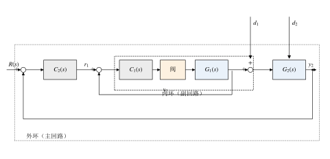
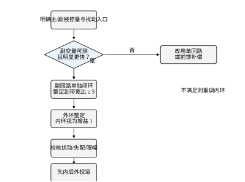
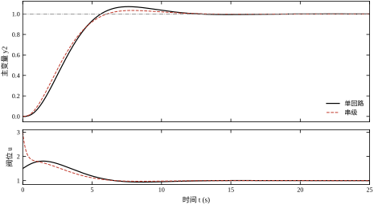
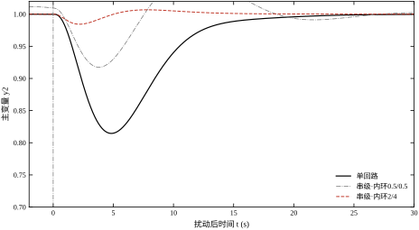
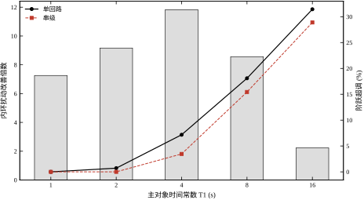
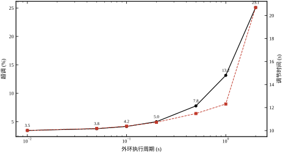
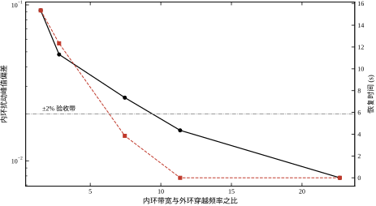
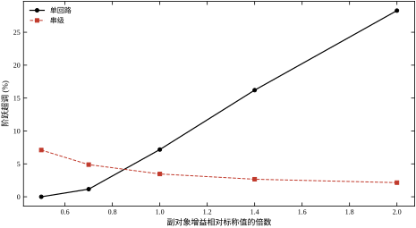
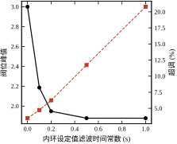
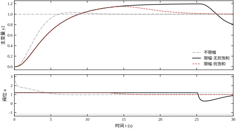

第 44 章把 PID 的三个旋钮讲清楚了，但那只解决了“回路怎么搭”的一半问题。真实的工业对象很少是一段干净的传递函数：燃料压力在阀后波动，冷却水温度在夹套里漂移，电网电压在电机前面跳变。这些扰动有的发生在离被控量很近的地方，有的发生在很远的地方。同一个 PID，装在离扰动近的位置和装在离扰动远的位置，抑制效果可以差一个数量级。串级控制就是为这件事生的：在扰动入口附近再套一个快回路，把扰动就地吃掉，不让它传到主变量。
本章沿用第 44 章的 PID 结论，不重复三项作用的推导。若对积分饱和、微分滤波、整定规则还不熟，请先回读第 44 章 §44.2 与 §44.9。本章只讨论“多套一层回路”带来的新问题：内外环怎么分工、快慢差多少才算够、参数按什么顺序调、离散实现时两个采样周期怎么配。
某换热器用蒸汽加热物料，工艺要求出口物料温度稳定在设定值。单回路方案是温度变送器直接进 PID，PID 输出直接驱动蒸汽调节阀。投运后发现：蒸汽母管压力一波动，出口温度就跟着晃，幅度约 ±3 ℃，要七八分钟才回稳。操作工的对策是把 PID 调得很慢，靠牺牲响应速度换平稳，结果换料时温度要十几分钟才跟上。
问题出在扰动的位置。蒸汽压力波动作用在阀后、换热器之前，而温度测点在换热器之后。单回路必须等热量传过整个换热器、温度真的变了，才从偏差里看出问题，此时扰动已经造成了全部影响。中间那个“蒸汽流量”其实一直在变，只是没人看它。
把流量也测出来、也闭环，情况就不同了。温度控制器不再直接指挥阀门，而是给出一个“需要多少流量”的设定值；流量控制器拿这个设定值和流量计读数比较，快速把阀开到需要的位置。压力波动一出现，流量计立刻看到，流量回路在零点几秒内就把阀补到位，温度几乎感觉不到。这就是串级：外环管“要多少”，内环管“给到位”。
串级的收益不是普适的，它与扰动进入系统的位置强相关。把扰动分三类看。
第一类，扰动进入内环之内，例如阀后压力、燃料热值、冷却水流量。这类扰动内环直接看得到，串级能在它污染主变量之前把它压住。本章算例中，同样幅值的阶跃扰动，单回路造成的主变量峰值偏差为 0.1855，串级为 0.0157，相差 11.8 倍；单回路要 12.99 s 才回到 ±2% 带内，串级从一开始就没出带。
第二类，扰动进入内外环之间，例如物料入口温度、进料流量。这类扰动内环看不到，外环必须自己扛，串级与单回路的能力相当。本章实测：单回路峰值偏差 0.1888，串级 0.1787，差别在 6% 以内，属于参数差异而非结构优势。
第三类，扰动直接作用在主变量上，例如环境散热、测量噪声。这类扰动谁也提前看不到，串级不但没有优势，还可能因为多了一层动态而略差。
所以现场判断“要不要上串级”，第一个问题不是“精度够不够”，而是“最大的扰动从哪儿进来”。扰动在内环之内，串级值得做；扰动在外环之外，做了也白做。
图 45-1 给出本章使用的结构。与单回路相比，多了三样东西：一个内环控制器 C_1(s)、一个内环测量 y_1、以及一个由外环输出充当的内环设定值 r_1。

四个信号的分工必须记牢：r 是工艺给定的主变量目标；y_2 是主变量实测；r_1 是外环算出的副变量目标，它是内环的设定值，不是执行器指令；u 才是真正送到阀门的信号。现场最常见的接线错误，就是把外环输出直接接到阀上、同时又把内环输出并进去，两个控制器抢同一个执行器，一投自动就打架。
两条回路的职责也不同。外环负责“准”：它含积分，保证主变量稳态无差，但它慢，因为它要等主变量真的偏了才动作。内环负责“快”：它把副变量死死按在 r_1 上，扰动来了就地消化，但它不保证主变量准，因为 r_1 本身可能算错。
如果只能记住一句话：串级把“快速但只管局部”的内环，包在“慢速但管全局”的外环里，用速度换抗扰。
这句话里有两个可验证的条件。其一，内环必须真的快，否则它来不及在扰动传到主变量之前完成抑制；本章 §45.6 给出量化判据：内环闭环带宽应不低于外环开环穿越频率的 5 倍，低于 3 倍时串级的抗扰优势基本消失。其二，外环必须能容忍内环的近似，它把内环当成一个增益为 1 的快速环节来设计，内环的残差与滞后会原封不动地进入外环，成为外环的“模型误差”。
本章按“原理—设计—连续—离散—稳定—参数—整定—改进—落地—边界—代码”推进。§45.2 用方块图化简给出串级的等效传递函数，说明内环究竟改变了什么；§45.3 把设计固化成六步；§45.4 给出本章算例的连续设计与跟踪结果；§45.5 讲双采样率实现；§45.6 用带宽比、扰动抑制倍数、失配鲁棒性三把尺子量化性能；§45.7 逐个说明内外环参数的作用；§45.8 讲“先内后外”的整定顺序与现场手法；§45.9 讨论设定值滤波、增益调度与副回路替代方案；§45.10 处理限幅、抗饱和、无扰切换与投运检查；§45.11 划定适用边界；§45.12 给出可复现代码。
误解一：串级一定比单回路好。 本章数据给出反例：外环扰动下两者峰值偏差 0.1888 与 0.1787，差别在噪声量级；扰动若直接作用在主变量上，串级还要多一层滞后。串级是“针对特定扰动位置”的结构，不是普遍升级。
误解二：内环越快越好。 内环增益加大会放大噪声、加剧阀的动作频次，还会把外环输出的设定值阶跃直接变成阀位冲击。本章实测：内环 K_p 从 2 提到 4、K_i 从 4 提到 8，内环扰动峰值从 0.0157 降到 0.0078，但阀位峰值从 3.000 涨到 6.000。阀门寿命与定位器磨损是真实成本，快要有上限。
误解三：内外环可以用同一个采样周期。 用同一个周期当然能跑，但外环不需要那么快，内环又嫌不够快。本章 §45.5 的多速率试验显示：外环周期从 0.01 s 放宽到 0.5 s，超调只从 3.46% 涨到 7.79%；放宽到 2 s，超调涨到 25.10%。工程上按“内环快、外环慢”配置，既省算力又符合两者的带宽关系。
理解了这三条，就能明白串级不是一个“更高级的 PID”，而是一次测量点的重新选择：把测量点从远离扰动的地方，挪到扰动入口附近，然后用一个快回路守住它。
同一个结构在文献与现场有五种叫法，先把它们对齐，避免读资料时误以为是不同的东西。
串级控制（cascade control）是控制理论的标准译名，“串”指两个回路串联：外环的输出不是执行器指令，而是内环的设定值。级联是同一个词的另一种译法，多用于电力与化工文献，含义完全相同。
主副回路（primary/secondary loop）是过程工业的叫法。主回路对应工艺目标（温度、液位），副回路对应实现目标的手段（流量、阀位）。这个叫法比“内外环”更贴近现场思维：操作工关心的是“主变量准不准”，而“副变量”只是保证主变量的工具。本章两种叫法混用，“内环”与“副回路”、“外环”与“主回路”始终是同一件事。
主从控制（master/slave）多用于运动控制，语义与主副回路相同，但“从”字带有从属意味，在讲回路职责时不如“副”准确。双闭环是伺服领域的叫法，特指“位置环套速度环”这一类，本质仍是串级。
监督控制（supervisory control）容易与串级混淆，但它指的是“上层优化给下层回路发设定值”，上层通常不参与快速闭环，时间尺度是分钟到小时；串级的两层都在秒级闭环内。二者的差别不在结构，而在时间尺度。
还有两个容易混的结构。分程控制是一个控制器驱动两个阀（例如大阀与小阀分程），只有一个回路；选择性控制是多个测量值经高选/低选后进同一个控制器，也只有一个回路。它们与串级一样属于“复杂回路”，但解决的是“执行器切换”与“变量保护”，不是“扰动位置”。第 107 章会把这几类放在一起比较。
术语对齐之后，本章的表述可以统一成一句：串级是把“工艺目标”与“实现手段”分成两层闭环，外层慢而准，内层快而稳。
为避免读完一节就迷路，先把本章的三个锚点问题列出来，它们分别对应后面的三组数字。
问题一：串级到底改善了什么？ 答案在 §45.2 与 §45.4：改善的是内环扰动通道，机理是分子上多了 S_1；对设定值与外环扰动，改善有限甚至没有。量化结果是 11.8 倍、3.46% 对 7.18%、0.1787 对 0.1888。
问题二：要快多少才算够？ 答案在 §45.3 与 §45.6：内环带宽至少是外环穿越频率的 5 倍，8–20 倍为优良区；本章 11.37 对应 11.8 倍抑制、65.56° 相位裕度。低于 3 倍时，串级退化为“多了一层滞后的单回路”。
问题三：代价是什么、什么时候不该做？ 答案在 §45.7 至 §45.11：代价是 K_{p1}K_{p2} 的控制量冲击、多一个测量点、多速率的实现复杂度；不该做的情况是扰动不在内环之内、副变量太慢、阀门没有余量。三条判据在 §45.11.4。
三个问题串起来，就是本章的逻辑主线：先确认扰动位置（问题一），再确定快慢标准（问题二），最后核算代价与边界（问题三）。后面的公式与仿真，都是为这三个问题提供数字支撑。
§45.1 说“内环把扰动就地吃掉”，这句话必须在传递函数上兑现。本节做三件事：把串级化简成外环能看懂的形式，找出内环究竟在哪个通道上加了什么因子，再把这个因子换算成可测量的带宽指标。
沿用图 45-1 的结构。内环控制器 C_1(s)、内环对象 G_1(s)、外环控制器 C_2(s)、外环对象 G_2(s)。两个扰动入口：d_1 加在 G_1 的输入端（阀后、副对象之前），d_2 加在 G_2 的输入端（内外环之间）。
先只看内环。以 r_1 为输入、y_1 为输出，闭合 C_1 后有
y_1=\frac{C_1G_1}{1+C_1G_1}\,r_1+\frac{G_1}{1+C_1G_1}\,d_1 \tag{45-1}
定义内环闭环传递函数与内环灵敏度函数
T_1(s)=\frac{C_1G_1}{1+C_1G_1},\qquad S_1(s)=\frac{1}{1+C_1G_1} \tag{45-2}
T_1 描述“设定值能不能跟住”，S_1 描述“扰动能不能压住”。两者互补：T_1+S_1=1。内环做得越猛，T_1\to1、S_1\to0，设定值跟得越准、扰动压得越狠。代价在 §45.6 讨论。
再闭外环。外环的对象不是 G_2，而是“G_2 串上已经闭合的内环”，即 G_2T_1。外环控制器看到的误差是 r-y_2，输出是 r_1：
y_2=\frac{C_2G_2T_1}{1+C_2G_2T_1}\,r+\frac{G_1G_2S_1}{1+C_2G_2T_1}\,d_1+\frac{G_2}{1+C_2G_2T_1}\,d_2 \tag{45-3}
式 (45-3) 是本章的主方程。三条通道分别是设定值通道、内环扰动通道、外环扰动通道。把它们与单回路 C 直接控阀的结果并列，差别一眼可见。
单回路的对应式为
y_2=\frac{CG_1G_2}{1+CG_1G_2}\,r+\frac{G_1G_2}{1+CG_1G_2}\,d_1+\frac{G_2}{1+CG_1G_2}\,d_2 \tag{45-4}
比较式 (45-3) 与式 (45-4)：设定值通道与 d_2 通道的结构完全同构，只是把 C 换成了 C_2、把 G_1 换成了 T_1。唯独 d_1 通道多了一个 S_1 因子。串级的全部收益都藏在这个 S_1 里，全部代价则藏在 T_1\ne1 这个事实上。
表 45-1 把三条通道的差异列清楚。
| 通道 | 单回路 | 串级 | 差异来源 |
|---|---|---|---|
| 设定值 r\to y_2 | CG_1G_2/(1+CG_1G_2) | C_2G_2T_1/(1+C_2G_2T_1) | G_1 换成 T_1 |
| 内环扰动 d_1\to y_2 | G_1G_2/(1+CG_1G_2) | G_1G_2S_1/(1+C_2G_2T_1) | 多乘 S_1 |
| 外环扰动 d_2\to y_2 | G_2/(1+CG_1G_2) | G_2/(1+C_2G_2T_1) | 无额外抑制 |
表 45-1 解释了 §45.1.2 的实测排序：d_1 通道有 S_1 加持，串级大幅领先；d_2 通道没有，两者相当。
S_1 在频域的大小决定了抑制倍数。在频率 \omega 处，
\left|S_1(\mathrm{j}\omega)\right|=\frac{1}{\left|1+C_1(\mathrm{j}\omega)G_1(\mathrm{j}\omega)\right|} \tag{45-5}
分母就是内环回路增益加一。只要内环在扰动能量集中的频段内回路增益远大于 1，S_1 就远小于 1，d_1 传到主变量之前已被削弱。
本章算例的内环对象为 G_1=1/(0.5s+1)，控制器取 C_1=2+4/s。在 \omega=1 rad/s 处，
C_1(\mathrm{j}1)=2+\frac{4}{\mathrm{j}1}=2-\mathrm{j}4,\qquad G_1(\mathrm{j}1)=\frac{1}{1+\mathrm{j}0.5} \tag{45-6}
乘起来
C_1(\mathrm{j}1)G_1(\mathrm{j}1)=(2-\mathrm{j}4)(0.8-\mathrm{j}0.4)=-\mathrm{j}4.0 \tag{45-7}
于是 |1+C_1G_1|=|1-\mathrm{j}4.0|\approx4.12，|S_1|\approx0.24。也就是说，1 rad/s 附近的内环扰动传到主变量时只剩约四分之一。频率越低，积分项 4/\mathrm{j}\omega 越大，|S_1| 越小；频率高到 \omega\gg\omega_{b1} 时 |S_1|\to1，内环来不及反应，扰动原样通过。
这就是“内环只能压住它带宽以内的扰动”的数学表述。工程含义很直接：先看扰动的频谱落在哪里，再看内环带宽够不够覆盖它。蒸汽压力波动的典型频段在 0.1–2 Hz，内环带宽取 5 rad/s（约 0.8 Hz）只能覆盖一半，取 30 rad/s 才能基本覆盖。
外环设计时把 T_1 当作 1，实际 T_1=1-S_1。定义外环的等效对象与模型误差
\tilde G_2(s)=G_2(s)T_1(s)=G_2(s)\left[1-S_1(s)\right] \tag{45-8}
\frac{\tilde G_2-G_2}{G_2}=T_1-1=-S_1 \tag{45-9}
式 (45-9) 说明：内环的灵敏度函数，就是外环的乘性模型误差。S_1 在低频很小，外环几乎看不到差别；在穿越频率附近若 |S_1| 还有 0.2，外环的相位裕度就会被这个“看不见的滞后”吃掉一部分。
对一阶内环加 PI 控制器，低频段有近似
\left|S_1(\mathrm{j}\omega)\right|\approx\frac{\omega}{\omega_{b1}},\qquad \omega\ll\omega_{b1} \tag{45-10}
其中 \omega_{b1} 是内环闭环 -3 dB 带宽。式 (45-10) 把“内环要快多少”变成一道除法：外环穿越频率处要求 |S_1|\le0.2，就得 \omega_{b1}\ge5\omega_{c2}；要求 |S_1|\le0.1，就得 \omega_{b1}\ge10\omega_{c2}。这就是 §45.6 中 5 倍准则的出处，它不是经验口号，而是式 (45-9) 的直接推论。
内环若也带积分，闭环特征方程变为
1+C_2G_2\frac{C_1G_1}{1+C_1G_1}=0 \;\Longrightarrow\; (1+C_1G_1)+C_2G_2C_1G_1=0 \tag{45-11}
两个 PI 相乘后，开环传函在原点有两个极点，相位在低频就跌到 -180^\circ，闭环极易出现低频慢振荡。这种振荡在现场表现为“主变量围着设定值缓慢画圈”，周期往往在几分钟量级，操作工称之为“晃”。
因此常规做法是：内环只用 P，或只用很弱的 I（T_{i1} 取副对象时间常数的 3–10 倍），把消差的任务留给外环。本章算例的内环取 K_{p1}=2、K_{i1}=4（T_{i1}=0.5 s），与副对象时间常数同量级，属于“偏快”的配置，用来展示收益上限；工程上更常见的是 T_{i1}\ge2T_1。
内环不加积分还有一个附带好处：副回路的积分饱和问题不存在，抗饱和只需处理外环输出与外环积分。这一点在 §45.10 的投运检查里会再用到。
外环输出 r_1 对内环来说是设定值阶跃。内环 P 作用立即响应，阀位在第一个采样周期就跳到
u(0^+)=K_{p1}\,e_1(0^+)=K_{p1}\left[r_1(0^+)-y_1(0^+)\right] \tag{45-12}
而 r_1(0^+)=K_{p2}\left[r(0^+)-y_2(0^+)\right]=K_{p2}（单位阶跃、零初值）。代入本章参数 K_{p1}=2、K_{p2}=1.5：
u(0^+)=2\times1.5=3.0 \tag{45-13}
实测阀位峰值正是 3.000（§45.4 表 45-3）。单回路在同一工况下阀位峰值为 1.805，因为只有一个 K_p 在起作用。串级的控制量冲击是两级增益相乘的结果，这是它最容易被忽视的代价，也是 §45.9 要加设定值滤波的原因。
式 (45-12) 还给出一个设计约束：若执行器上限为 u_{\max}，则 K_{p1}K_{p2}\le u_{\max}/\Delta r。本章算例的阀门若限在 ±1.2，3.0 的峰值必然触发限幅，§45.9 的限幅试验正是从这一点出发的。
串级在计算机里是两段位置式 PID，各自维护积分器与微分状态。内环每个采样周期执行一次，外环每 N_r 个内环周期执行一次：
r_1[k]=K_{p2}e_2[k]+I_2[k]+K_{d2}\frac{e_2[k]-e_2[k-1]}{T_{s2}} \tag{45-14}
u[k]=K_{p1}e_1[k]+I_1[k]+K_{d1}\frac{e_1[k]-e_1[k-1]}{T_{s1}},\qquad e_1[k]=r_1[k]-y_1[k] \tag{45-15}
其中 I_1,I_2 为两级的积分累加项。注意 r_1[k] 在内环的每个周期都保持不变（零阶保持），这就是多速率的全部含义：外环算得慢，内环照着最近一次的 r_1 反复执行。
离散化带来的两个新问题——内环采样周期怎么定、外环与内环的周期比允许多大——分别在 §45.5 与 §45.6 展开。这里只强调一点：式 (45-14) 的积分累加按 T_{s2} 计，式 (45-15) 按 T_{s1} 计，两者不能混用同一个周期；现场把两个回路的 T_s 参数填成同一个值，是“串级投自动后周期振荡”的常见原因。
式 (45-3) 的三项系数，把本章的实测数字代进去，可以得到一张“通道画像”，它解释了 §45.1.2 的定性判断为什么成立。
设定值通道 C_2G_2T_1/(1+C_2G_2T_1)。低频增益为 1（外环含积分），单位阶跃下超调 3.46%、上升 3.720 s。与单回路的 7.18%、3.523 s 相比，串级在设定值通道上并没有“更快”，只是“更稳”。原因在 §45.4.2 已经说过：T_1 的稳态增益 K_{p1}/(1+K_{p1})=0.667 让外环实际看到的对象增益只有设计值的 2/3，等效于把外环增益调小。
内环扰动通道 G_1G_2S_1/(1+C_2G_2T_1)。与单回路的 G_1G_2/(1+C_2G_1G_2) 相比，分子上多了一个 S_1，分母上的 G_1 换成了 T_1。低频段 S_1\approx0，所以两条通道的稳态增益都是 0；差别在中频段——扰动的主频落在 0.3–4 rad/s 之间时，|S_1| 从 0.67 一路降到 0.09，串级把这一段压下去了。本章峰值偏差 0.1855→0.0157（11.8 倍）就是这个因子的直接兑现。
外环扰动通道 G_2/(1+C_2G_2T_1)。与单回路的 G_2/(1+C_2G_1G_2) 相比，分母里的 G_1 同样换成了 T_1，但分子没有 S_1 这个“抑制因子”。也就是说，外环扰动不经过内环，串级对它没有任何额外的抑制手段；T_1 与 G_1 的差别只体现在相位上，反映为恢复时间略慢（13.370 s 对 12.420 s）。实测 0.1888 与 0.1787 的 5% 差异，来自 T_1 在中频的幅值略小于 1，属于“顺便沾了点光”，不是结构优势。
把三条通道并排看，可以得到一个简洁的判断法则：串级的收益全在分子上带 S_1 的那条通道。设计时先问“我的扰动走哪条通道”，再决定要不要上串级；这比笼统地说“串级抗扰好”精确得多。
框图化简还留下一个隐含问题：内环闭合后，外环的对象 G_2T_1 是否“良定”（well-posed）？若 G_1 与 G_2 都是真有理函数、C_1 也是真有理函数，则 T_1 真有理，G_2T_1 严格真有理，外环的闭环不会有代数环。工程上出问题的是另一种情况：副变量由静态代数关系算出（例如用阀位乘以一个增益当流量），此时 T_1 的分子分母同阶，外环闭合就出现代数环，离散实现时表现为“当前拍的输出依赖当前拍的输出”，必须引入一拍延迟才能算。
内部稳定性还要求：C_1、C_2、G_1、G_2 之间不能有右半平面零极点对消。现场最接近这种情形的是“内环控制器带一个与副对象极点相同的零点”——整定时若用了“零极点对消”的规则（如 T_{i1}=T_1），而副对象时间常数辨识有误，就会留下一个接近对消但不完全对消的慢模态，表现为投运后很长时间才暴露的缓慢漂移。第 44 章讲 IMC 整定时提过这一点，串级里因为多了一层，风险更高：内环的对消错误会通过 T_1 传到外环，而外环的设计又假定 T_1 是干净的。
实践上的两条防线：其一，内环积分时间不要刻意取成与副对象时间常数完全相等，留 20% 以上的差距；其二，投运后观察 30 min 以上的长趋势，专门看有没有缓慢漂移，阶跃试验看不出来。
式 (45-21) 的稳定性可以用 Nyquist 判据几何地看，比代数推导更直观。外环开环 L_2=C_2G_2T_1 的 Nyquist 曲线，与单回路的 C_2G_1G_2 相比，差别集中在穿越频率所在的中频段。
低频段（\omega\ll\omega_{b1}）：T_1\approx K_{p1}/(1+K_{p1})，是一条实数增益，曲线形状与单回路几乎相同，只是幅值缩了 0.667 倍。
中频段（\omega\approx\omega_{c2}）：T_1 开始带相位滞后，-S_1 的幅值约 1/r_b。Nyquist 曲线在这一段被“往原点方向拉”了一点，同时顺时针偏转，表现为相位裕度增大。r_b 越大，拉得越狠、偏得越少，曲线离 (-1,\mathrm{j}0) 越远。
高频段（\omega\gg\omega_{b1}）：T_1\to1，L_2\approx C_2G_2，与单回路的高频段重合。这一段与中频段的过渡共同决定幅值裕度，因此 GM 受内环影响较小，实测五档都在 18–28 dB。
把三段连起来看，内环的作用不是“改变回路增益”，而是“重新塑造中频段的方向”：它让 Nyquist 曲线在穿越频率附近更“竖直”（相位滞后更小），从而给出更大的相位裕度。这正是 §45.6.6 中 PM 从 45.90° 升到 68.02° 的几何解释。
Nyquist 视角还解释了一个容易困惑的现象：内环越快，外环穿越频率越高（0.2949→0.3532 rad/s），但相位裕度也越大。若只看“穿越频率升高会减少裕度”的单回路经验，会得出相反结论。原因是内环同时把中频段的相位滞后清掉了，两个效应方向相反，后者的作用更大。
§45.2 给出了“为什么”，本节给出“怎么做”。串级的设计顺序不能颠倒：先选副变量、再整内环、然后才整外环。现场把顺序做反（先按单回路把外环调好，再加内环），结果往往是两个回路互相拖，怎么调都不对。图 45-2 是本节固化的六步流程。

副变量的选择决定了串级的上限，选错了后面怎么调都白搭。四条判据，按优先级排列。
其一，副变量必须在扰动入口的下游、主变量的上游。 这正是 §45.1.2 的结论。蒸汽压力扰动作用在阀后，流量在阀后、换热器之前，所以流量合格；如果扰动来自物料入口温度，那么流量计看不到它，选流量做副变量对这个扰动毫无帮助。
其二，副变量必须可测且测量快。 温度变送器带保护套管时时间常数可达几十秒，用它做副回路等于把快回路做成了慢回路。本章算例的副对象时间常数 0.5 s，属“仪表级”快；工程上副对象时间常数超过主对象的三分之一，就要重新考虑副变量。
其三，副变量与主变量之间要单值、单调。 流量增大必然使温度上升，这才可控。若中间存在换向（如某些放热反应的温度—流量关系在中段出现极大值），副回路会在两个工作点之间跳。
其四，副变量对主变量的影响要显著。 若副变量变化 10% 只引起主变量 0.5% 的变化，内环把副变量按得再死，主变量也感受不到。
四条都满足的副变量通常只有一个，不必纠结。副变量选定后，主、副对象的时间常数比就定了，这个比值是后面所有指标的物理上限。
把外环断开（外环置手动，其输出 r_1 由人手给），内环按单回路整定。此时内环就是一个普通回路，第 44 章的方法全部适用。
内环整定的目标不是“超调最小”，而是“闭环带宽够大、且对副对象增益变化不敏感”。具体做法：
这一步结束时应该拿到两个数：内环闭环带宽 \omega_{b1} 和内环闭环近似时间常数 \tau_1\approx1/\omega_{b1}。它们是下一步的输入。
闭合内环后，外环的对象是 G_2T_1，不是 G_2。设计外环时必须用这个等效对象，否则会把内环的滞后重复计算一次。
工程上有两种处理，精度不同但结论一致。
近似一（粗略）：把 T_1 当成 1。 当 \omega_{b1}\ge5\omega_{c2} 时，外环穿越频率处 |S_1|\le0.2，T_1 的幅值在 0.8–1.0 之间、相位滞后不到 12^\circ。此时直接按 G_2 设计外环，误差落在裕度里。
近似二（较准）：把 T_1 近似为一阶惯性。 一阶内环加 P 控制时，T_1=K_{p1}/(0.5s+1+K_{p1})，即时间常数 \tau_1=0.5/(1+K_{p1})、增益 K_{p1}/(1+K_{p1})。K_{p1}=2 时 \tau_1=0.167 s、增益 0.667。把这一阶并进 G_2，外环看到的是“二阶对象 + 一个小惯性 + 一个 0.667 的增益”，再按第 44 章的 IMC 或 ZN 规则整定。
本章采用近似二，得到外环 K_{p2}=1.5、T_{i2}=4 s。注意 T_{i2} 与主对象的主导时间常数 4 s 同量级，这是 IMC 规则 \lambda\approx T_{i} 的典型结果。
外环按单回路整定，但要用内环闭合后的等效对象，并且整定完必须回算带宽比
r_b=\frac{\omega_{b1}}{\omega_{c2}} \tag{45-16}
其中 \omega_{c2} 是外环开环穿越频率。r_b\ge5 合格，3\le r_b<5 勉强，r_b<3 说明内环不够快，串级的抗扰优势基本消失。
本章实测的带宽比很说明问题：内环取 K_{p1}=0.5、K_{i1}=0.5（几乎不控）时，\omega_{b1}=0.439 rad/s，外环穿越 0.2949 rad/s，r_b=1.49；内环取 2/4 时 \omega_{b1}=4.005 rad/s、r_b=11.37；内环取 4/8 时 \omega_{b1}=8.010 rad/s、r_b=22.68。三种配置下内环扰动峰值偏差依次为 0.0922、0.0157、0.0078，与带宽比同向变化。
若复核发现 r_b 不够，处理顺序是：先加内环增益（受噪声与阀位冲击限制），再考虑换更快的副变量测量，最后才动外环——把外环调慢虽然也能抬高 r_b，但代价是主变量响应变慢，等于用性能换结构。
内环采样周期按第 44 章的准则：T_{s1}\le\tau_1/10。本章 \tau_1=0.167 s，故 T_{s1}\le0.017 s，仿真取 0.01 s 正好落在合理区间；若图省事取 0.05 s，T_{s1}/\tau_1=0.3，内环的相位滞后会把式 (45-10) 的带宽优势吃掉一大半。
外环周期取 T_{s2}=N_rT_{s1}，N_r 由带宽比反推：外环带宽是内环的 1/r_b，采样周期可放宽 r_b 倍，再留 2–3 倍余量，故 N_r\approx r_b/3。r_b=12 时 N_r\approx4，即外环每 4 个内环周期算一次。
N_r 不是越大越省。本章多速率试验（T_{s1}=0.01 s 固定）：N_r=1 超调 3.46%，N_r=50（外环 0.5 s）超调 7.79%，N_r=100（1 s）13.16%，N_r=200（2 s）25.10%。N_r 超过 r_b/2 后超调迅速恶化，因为外环的零阶保持已经引入了可与自身带宽相比的附加滞后。
投运顺序固定为：内环先投自动、外环后投自动；停运时反过来。内环还没稳就把外环投自动，外环会把内环的暂态当成对象特性，积分器一路积到限幅。
投运前必须核三件事：
表 45-2 把六步的产出与判据收在一处，投运前逐项打勾。表中“本章取值”一列给出算例的实际数字，便于对照。
| 步骤 | 产出 | 判据 | 本章取值 |
|---|---|---|---|
| 一 选副变量 | 副对象 G_1 | 在扰动下游、主变量上游，\tau_1<\tau_2/3 | 1/(0.5s+1)，\tau_1=0.5 s |
| 二 整内环 | C_1、\omega_{b1} | 上升时间 \approx\tau_1/3，增益上浮 40% 仍稳 | K_{p1}=2，K_{i1}=4，\omega_{b1}\approx4 |
| 三 等效对象 | G_2T_1 | 用等效对象而非 G_2 设计外环 | \tau_1=0.167 s，增益 0.667 |
| 四 整外环 | C_2、r_b | r_b\ge5 | K_{p2}=1.5，T_{i2}=4 s，r_b=11.37 |
| 五 分周期 | T_{s1}、N_r | T_{s1}\le\tau_1/10，N_r\approx r_b/3 | 0.01 s，N_r=4 |
| 六 投运 | 限幅、抗饱和、切换 | 冲击 \le 行程，外环先手动 | 冲击 3.0，需滤波 |
这张表的作用不是替代计算，而是防止漏项。现场调试出问题时，按表逐行回查，通常能定位到某一行的判据没满足。
六步走完之后，不要直接投运，先按下面八条自查。每一条都给了可判定的阈值，避免“感觉差不多”。
这八条里，第 1、4 条不满足属于“设计前提不成立”，必须回到结构层面（换测量点、换阀、加前馈）；第 2、3、5、6、7 条不满足属于“参数或实现问题”，可以在现有结构内调整；第 8 条不满足属于“工程完备性问题”，与性能无关，但一旦出事后果最重。
现场最常见的返工是第 3 条与第 4 条同时不满足：内环不够快（r_b 小），操作工于是加 K_{p1}，加了之后阀位冲击超标，又回头降 K_{p2}，K_{p2} 一降外环变慢，r_b 反而更小。这个循环的根源是副变量本身选得不好——在错误的副变量上，带宽比与阀位冲击是一对无法同时满足的矛盾。此时唯一的出路是换测量点或改结构，调参只会来回震荡。
前三节讲结构与设计，本节把数字摆出来。算例对象、控制器参数与全部指标都来自 code/ch045_sim.py 的实跑输出，可逐项复现。
副对象（阀 + 流量）取一阶快环节，主对象（换热 + 温度）取二阶过阻尼慢环节：
G_1(s)=\frac{1}{0.5s+1},\qquad G_2(s)=\frac{1}{(4s+1)(s+1)} \tag{45-17}
主、副时间常数相差 8 倍，属于典型的“副回路够快”工况。内环 C_1=2+4/s，外环 C_2=1.5(1+1/4s)，单回路基线用同一套外环参数 C=1.5(1+1/4s) 直接控阀，两者唯一差别是有无内环。
选择这个基线而不是“各自调到最优”，是为了让对比只反映结构差异。单回路的 K_p=1.5 在它的可达范围内已有阀位余量（峰值 1.805），并未刻意调弱。
单位阶跃设定值下，两条回路的响应见图 45-3，指标列于表 45-3。

| 指标 | 单回路 | 串级 | 说明 |
|---|---|---|---|
| 超调 M_p | 7.18% | 3.46% | 串级减半 |
| 上升时间 t_r | 3.523 s | 3.720 s | 串级略慢 5.6% |
| 调节时间 t_s | 10.920 s | 10.010 s | 串级略快 8.3% |
| 阀位峰值 \lvert u\rvert_{\max} | 1.805 | 3.000 | 串级为 1.66 倍 |
表 45-3 的读法要小心。超调确实降了一半，但这不是内环的功劳，而是外环“看错了对象”的副产品：外环设计时把 T_1 近似为增益 0.667 的小惯性，实际闭环增益略低于设计值，等效于把外环增益调小了一点。上升时间略慢、调节时间略快，都是同一件事的两面。
真正值得注意的是最后一行。串级的阀位峰值 3.000 正是 §45.2.5 用 K_{p1}K_{p2}=3.0 算出的值，两级增益相乘的冲击在这里兑现。单回路只有一级增益，峰值 1.805。如果阀门行程只有 ±1.2，串级从一开始就会撞限幅，这一点在 §45.10 会展开成整节的讨论。
所以对设定值跟踪，串级不是“更好的方案”，而是“用 1.66 倍的阀位冲击换一半的超调”。若工艺关心的是换料时的超调，这笔交易划算；若阀门本就没有余量，这笔交易做不成。
本节的主戏。在 t=30 s（跟踪已稳定）时，于 G_1 输入端加幅值 -0.5 的阶跃扰动，模拟阀后压力突降。图 45-7 给出三条曲线，表 45-4 给出五组内环参数下的完整扫描。

| 内环 K_{p1},K_{i1} | 峰值偏差 | 恢复时间 | \omega_{b1} (rad/s) | r_b | 阀位峰值 |
|---|---|---|---|---|---|
| 单回路（无内环） | 0.1855 | 12.990 s | — | — | 1.805 |
| 0.5, 0.5 | 0.0922 | 15.360 s | 0.439 | 1.49 | 1.646 |
| 1, 1 | 0.0481 | 12.330 s | 0.911 | 2.79 | 1.654 |
| 2, 2 | 0.0254 | 3.850 s | 2.544 | 7.45 | 3.000 |
| 2, 4 | 0.0157 | 未出带 | 4.005 | 11.37 | 3.000 |
| 4, 8 | 0.0078 | 未出带 | 8.010 | 22.68 | 6.000 |
表 45-4 有三层信息。
第一层，抑制倍数与带宽比同向。 峰值偏差从 0.0922 一路降到 0.0078，正好对应带宽比从 1.49 涨到 22.68。0.5,0.5 这一档的带宽比只有 1.49，按式 (45-10) 外环穿越频率处 |S_1|\approx0.29/0.44\approx0.67——扰动只被削掉三分之一，内环的收益基本被它自己引入的滞后吃掉了，峰值偏差 0.0922 虽仍优于单回路的 0.1855，但恢复时间反而更长（15.360 s 对 12.990 s）。带宽比不到 2 时，串级算不上有效。
第二层，恢复时间不是单调的。 0.5,0.5 档最差（15.360 s），2,2 档最好（3.850 s），2,4 与 4,8 档干脆从未出带。原因是恢复时间由外环决定，而外环的输出 r_1 要经过内环才生效：内环太慢时，r_1 的修正被拖住，恢复变慢；内环够快后，r_1 的修正立刻兑现，恢复时间回到外环自己的节奏，甚至因为峰值偏差本来就小，主变量从头到尾没出 ±2% 带。
第三层，阀位峰值由设定值冲击主导。 2,2、2,4、4,8 三档的阀位峰值 3.000、3.000、6.000，正是 K_{p1}K_{p2} 在 t=0 时的瞬时冲击（1.5\times2=3、1.5\times4=6），与扰动大小无关。0.5,0.5 与 1,1 档峰值只有 1.646、1.654，是因为内环增益本就小，冲击小；代价是峰值偏差大、恢复慢。收益与阀位冲击都随内环增益单调上涨，没有免费的午餐。
工程上取哪一档？取 2,4 而不是 4,8：前者的峰值偏差 0.0157 已比单回路好 11.8 倍，阀位峰值 3.000 还能靠加长行程来容；后者的收益只多一倍，阀位却再翻一倍。若阀门行程只有 ±1.2，两档都不可行，应先做 §45.9 的设定值滤波，把冲击压下来。这就是 §45.1.5“内环越快越好”是误解的定量依据。
把同一幅值 -0.5 的阶跃改加到 G_2 输入端（模拟物料入口温度变化），结果：单回路峰值偏差 0.1888、恢复 12.420 s；串级 0.1787、恢复 13.370 s。
串级略好 5%，但恢复反而慢了近 1 s。这 5% 来自参数差异（外环等效对象略有不同），不是结构优势；恢复变慢则是因为 r_1 到 u 之间多了内环这一环动态。对内外环之间的扰动，串级没有可用的机理，§45.1.2 的判断在这里得到验证。
这条结论在现场很有用：如果主变量波动的主因是进料温度而不是蒸汽压力，那么上串级是选错了工具，应该考虑前馈（第 46 章）而不是串级。
串级的收益依赖主、副对象的时间尺度分离。固定控制器参数，只改主对象主导时间常数 T_1（G_2=1/[(T_1s+1)(s+1)]），结果见图 45-4。

| T_1 (s) | 单回路偏差 | 串级偏差 | 改善倍数 | 单回路超调 | 串级超调 |
|---|---|---|---|---|---|
| 1 | 0.2246 | 0.0309 | 7.26 | 0.00% | 0.00% |
| 2 | 0.2100 | 0.0229 | 9.16 | 0.72% | 0.00% |
| 4 | 0.1855 | 0.0157 | 11.83 | 7.18% | 3.46% |
| 8 | 0.1432 | 0.0167 | 8.57 | 18.10% | 15.44% |
| 16 | 0.2430 | 0.1089 | 2.23 | 31.44% | 28.89% |
表 45-5 的形状是一个倒 U，但两侧的原因不同。
左侧（T_1=1–2 s）：主对象本身就快，外环可以把带宽调到较高频段，\omega_{c2} 逼近 \omega_{b1}，带宽比从 11 掉到 3 附近，内环的抑制能力来不及展开。此时串级仍是单回路的 7–9 倍，但绝对偏差都在 0.03 以下，两者的工程差别已经不大。
峰值在 T_1=4 s：主副时间常数比 8，带宽比 11.37，改善 11.83 倍，正好是本例中“内环足够快、外环又足够慢”的甜点。
右侧（T_1=8–16 s）：主对象越来越慢，两边的绝对偏差都开始抬头（T_1=16 时串级偏差 0.1089，是 T_1=4 时的 7 倍）。改善倍数掉到 2.23 不是内环失效，而是慢对象把扰动“积分”了更长时间，任何内环抑制都要经过这个慢惯性才能体现。串级改变的是扰动进入主变量的入口，改变不了主对象自身的惯性，这是它在极慢对象上收益有限的原因。
工程含义：副对象与主对象的时间常数比在 5–10 之间时，串级最划算；比值小于 3 说明副变量选得太慢，应换测量点；比值大于 20 说明主对象太慢，串级虽有效，但应同时考虑前馈（第 46 章）或从工艺上减小对象惯性。
把 §45.4.2–§45.4.4 的时域结论换到频域，只需三个数：内环闭环带宽 \omega_{b1}、外环开环穿越频率 \omega_{c2}、带宽比 r_b。
本章基准参数下，\omega_{b1}=4.005 rad/s，\omega_{c2}=0.3523 rad/s，r_b=11.37。按式 (45-10)，外环穿越频率处的 |S_1|\approx0.3523/4.005\approx0.088，即内环扰动在这个频段被压到不足 9%，外环因此只损失不到 5^\circ 的相位裕度。
把内环参数降到 0.5,0.5，\omega_{b1}=0.439 rad/s，此时 |S_1|\approx0.2949/0.439\approx0.67，内环几乎不抑制扰动，且外环看到的模型误差高达 67%，相位裕度被吃掉大半——这解释了表 45-4 第一行“恢复反而更慢”的现象。
频域校核的好处是不必反复跑时域仿真：整定完内环，算出 \omega_{b1}，与设计的外环 \omega_{c2} 一比，就能预判串级是否有效。时域仿真用来验证，频域比值用来设计，两者分工明确。
把 §45.4.2–§45.4.4 的三张表并排放，可以得到一张“该不该用串级”的决策图。同一个算例，三种典型工艺需求，收益方向完全不同。
需求 A：频繁换牌号，设定值阶跃多。 串级把超调从 7.18% 降到 3.46%，调节时间从 10.920 s 降到 10.010 s，代价是阀位峰值从 1.805 涨到 3.000。若阀门有余量，这笔交易划算：超调减半意味着换料时更少出废品。若阀门没有余量，串级反而不可用，因为冲击会先撞限幅。
需求 B：蒸汽压力波动频繁，设定值基本不变。 这是串级的“主场”。内环扰动下峰值偏差 0.1855→0.0157，改善 11.8 倍，恢复时间从 12.990 s 变成“未出带”。此时阀位冲击只发生在开车阶段，稳态运行时阀位动作幅度反而更小（内环把扰动就地消化，不必等主变量偏了才动）。
需求 C：进料条件波动频繁，蒸汽压力稳定。 外环扰动下 0.1888→0.1787，差别 5%，恢复时间还慢 1 s。此时串级不划算：多了一套测量与调试，换来的只有 5%。
三种需求的差别，用一句话概括：串级买的是“内环扰动”的抑制能力，其他通道的收益都是副产品或噪声。 决策时先做扰动溯源——现场连续记录一周的主变量与可能的扰动源，看哪一路的相关性最强；相关性最强的那一路若落在阀后（内环之内），串级值得做；落在进料侧（内外环之间），前馈更合适；落在环境或测量上，先解决仪表问题，任何结构都救不了。
这张“决策图”还可以反过来用：若已经上了串级但收益不明显，先别怀疑参数，先看扰动到底在哪条通道。本章 §45.11.5 的三个误用案例，都是这一步没做。
设计阶段常需要在不跑仿真时粗估性能。用一阶加纯滞后近似外环的等效对象 G_2T_1，按第 44 章的 IMC 规则可以估出 K_{p2}、T_{i2}；用 S_1 的低频近似 |S_1|\approx\omega/\omega_{b1} 可以估抑制倍数。两处预估在本章算例上的偏差方向如下。
外环增益：G_2T_1 的稳态增益是 0.667，若按 G_2 的增益 1 去整定，K_{p2} 会偏小 33%。本章 K_{p2}=1.5 是按等效增益 0.667 反算的，若误按 1 算，会得到 K_{p2}=1.0，响应明显偏慢。误差来源是把内环当成了理想 1:1 跟随，而实际 T_1(0)=K_{p1}/(1+K_{p1})。
抑制倍数：按 |S_1|\approx\omega/\omega_{b1} 在穿越频率处估得 1/r_b=0.088，即抑制约 11.4 倍；实测 11.8 倍，偏差 3%。这个近似在 r_b>5 时相当准，可以作为设计阶段的快速估算。
超调：按二阶近似（PM 65.56° 推阻尼比约 0.65）估超调约 7%，实测 3.46%，预估偏保守。原因是外环实际是三阶（G_2 二阶 + T_1 一阶），高阶极点进一步压低了超调。手算预估宁可按偏保守取，投运后再用实测修正。
这三处偏差指向同一条经验：串级的手算预估，误差主要来自“忘记内环不是理想跟随”。把 T_1(0) 与 |S_1| 这两个因子代进去，误差就能压到 10% 以内；忽略它们，误差可以到 30% 以上。
本章的仿真都用阶跃设定值，因为它最容易比较、指标定义最清楚。工程上还有斜坡与正弦两类设定值，串级在它们上面的表现与阶跃不同，需要单独说明。
斜坡设定值（程序升温、匀速变负荷）。 斜坡跟踪的稳态误差由系统的“型别”决定：外环含积分，系统是 I 型，斜坡输入下存在有限的稳态误差，大小约 1/K_v，K_v 由外环增益与积分时间决定。串级不改变系统型别——内环再多一个积分器，也只是把内环变成 I 型，外环看到的等效对象仍是 0 型（T_1 的稳态增益有限），整体仍是 I 型。所以斜坡误差主要靠加大 K_{p2} 或减小 T_{i2} 来压，与内环快慢关系不大。
串级在斜坡上的真正好处是动态滞后更小：内环快速跟随 r_1，主变量不会因为副回路的惯性而额外落后。本章的阶跃数据里，串级上升时间 3.720 s 比单回路 3.523 s 略慢，这是设定值冲击被 T_1 的 0.667 增益压小的结果；换成斜坡，冲击不存在，串级的滞后优势才会显现。这一点本章没有仿真数据，属于由结构推出的定性判断，读者若要用于定量设计，应先用 §45.12 的代码改成斜坡输入重跑。
正弦设定值（周期性负荷、往复工艺）。 稳态跟踪误差的幅值等于 |S_2(\mathrm{j}\omega)| 乘以输入幅值，\omega 越接近外环带宽，误差越大。串级在这里的作用是双重的：内环把中频段的相位滞后清掉，让外环的 |S_2| 在穿越频率附近更小；但同时内环本身在 \omega>\omega_{b1} 时趋近于 1，对高频正弦没有任何帮助。所以正弦设定的跟踪精度，在频率低于外环带宽时串级略优，高于内环带宽时两者相同。
脉冲设定值（短时切换、手动干预）。 脉冲宽度小于外环调节时间时，外环来不及响应，主变量基本不动；此时串级与单回路的行为都由内环决定，内环的设定值滤波（§45.9.1）会进一步削弱响应。这类工况下不应期待串级带来改善，也不应把“脉冲没响应”当成故障。
三类设定值合起来说明一件事：串级的设计目标是抗扰，不是跟踪。跟踪性能由外环决定，串级只是通过“减少内环滞后”间接帮一点忙。若工艺的主要矛盾是跟踪（例如频繁的程序升温），优化方向应是外环的型别与前馈，而不是继续加内环增益。
§45.2.6 给出了两段位置式 PID 的差分方程，本节讨论它落到 PLC 或 DCS 里之后才会出现的三个问题：内环周期能不能放宽、外环周期能放到多慢、两个周期怎么同步。
串级在程序里不是一个 PID 加一个开关，而是两段独立的 PID 运算，各自维护三样状态：积分累加项、上一拍误差（供微分用）、上一拍输出（供无扰切换用）。两段的差别集中在三处。
积分项的时间基准不同。 内环按 T_{s1} 累加，外环按 T_{s2} 累加。若两段共用同一个累加函数而把周期写死成 0.01 s，外环的实际积分时间会被拉长 N_r 倍——表现为“外环怎么调都嫌慢”，操作工于是继续加 K_{p2}，最后在外环上引入振荡。这是串级投运最常见的软件缺陷，且从参数表上看不出来。
微分项一般只在外环用。 副回路信号（流量、压力）噪声大，微分会把它放大到阀上；而且内环本身已经够快，不需要微分再提相位。若外环也带微分，要注意微分增益与内环带宽的关系：内环带宽以外的频段，T_1\approx1，外环的微分会对副回路噪声直接起作用。
保持环节有两个。 外环输出 r_1 在每个 T_{s2} 内保持不变，供内环反复读取；内环输出 u 在每个 T_{s1} 内保持不变，送到阀门。前者是 §45.2.6 说的多速率，后者是常规的零阶保持。两个保持叠加，外环看到的等效滞后约为 T_{s2}/2+T_{s1}/2 再加一拍的运算延迟，这是 §45.5.4 要定量讨论的对象。
内环周期由内环闭环带宽决定，判据与第 44 章一致：
T_{s1}\le\frac{1}{10\,\omega_{b1}} \tag{45-18}
本章 \omega_{b1}=4.005 rad/s，即上限约 0.025 s，仿真取 0.01 s 有余量。采样保持引入的等效相位滞后约为 \omega T_{s1}/2，在 \omega_{b1} 处只有 4.005\times0.01/2\approx0.02 rad，约 1.1^\circ，可忽略。
放宽到 0.05 s 会怎样？此时 \omega_{b1}T_{s1}/2=0.10 rad，约 5.7^\circ，看似仍可接受；但内环增益较高时，穿越频率附近的相位余量本就只有三四十度，5.7° 的额外滞后大致会把实际带宽压到 3 rad/s 附近，带宽比随之从 11.37 掉到 8 上下。内环周期不是“够用就行”，它会直接改写 §45.3.4 算出的带宽比。
工程上还要考虑副变量测量的滤波时间。流量变送器常带 0.1–0.2 s 的一阶滤波，这个滤波在内环闭环之内，等效于把副对象的时间常数加大，同样会压低 \omega_{b1}。选型时应把滤波时间算进副对象，而不是事后用提高 K_{p1} 去补偿。
外环周期决定 N_r=T_{s2}/T_{s1}。图 45-5 与表 45-6 给出固定内环 0.01 s、只改 N_r 的扫描结果。

| N_r | 外环周期 (s) | 超调 | 上升时间 | 调节时间 |
|---|---|---|---|---|
| 1 | 0.01 | 3.46% | 3.720 s | 10.010 s |
| 5 | 0.05 | 3.77% | 3.697 s | 10.180 s |
| 10 | 0.10 | 4.17% | 3.670 s | 10.380 s |
| 20 | 0.20 | 5.01% | 3.619 s | 10.720 s |
| 50 | 0.50 | 7.79% | 3.498 s | 11.480 s |
| 100 | 1.00 | 13.16% | 3.391 s | 12.310 s |
| 200 | 2.00 | 25.10% | 3.420 s | 20.700 s |
表 45-6 的读法：外环周期在 0.2 s 以内（N_r\le20）时，超调从 3.46% 涨到 5.01%，几乎没有代价；0.5 s 时 7.79%，开始可感；1 s 时 13.16%，已经超过单回路的 7.18%；2 s 时 25.10%，不可接受。
上升时间反而随周期放宽而略降（3.720→3.420 s），这是“外环动作变粗、等效增益变大”的表现，不能当作改善——同一张表里调节时间从 10.010 s 涨到 20.700 s，才是真实代价。
按 §45.3.5 的经验 N_r\approx r_b/3，本章 r_b=11.37，N_r\approx4，与表中“N_r\le20 几乎无损”的结论相容且更保守。现场若算力充裕，取 N_r=5–10 即可，不必追求内外环同周期。
把表 45-6 的劣化折算成相位，可以对上号。外环的零阶保持等效滞后 T_{s2}/2，加上一拍运算延迟 T_{s2}，合计 1.5T_{s2}。在外环穿越频率 \omega_{c2}=0.3523 rad/s 处：
这三组数与表 45-6 一一对应。多速率的代价不是“外环算得少所以不准”，而是“外环的保持与延迟在穿越频率处贡献了相位滞后”，本质与第 44 章讨论的纯滞后相同。
由此得到外环周期的上限估计：
T_{s2}\le\frac{\varphi_{\mathrm{allow}}}{1.5\,\omega_{c2}} \tag{45-19}
若允许附加滞后 15^\circ（0.26 rad），\omega_{c2}=0.3523 rad/s，则 T_{s2}\le0.49 s。这与表 45-6 中 0.5 s 处超调开始抬头的位置吻合，可作为 N_r 的独立校核。
多速率实现有四条硬要求。
其一，外环输出的时间戳。 内环每拍都要知道当前的 r_1 是哪个时刻算出来的。若两个任务在不同优先级的任务里跑，外环刚写完 r_1、内环读到一半，可能拿到新旧混合的值（16 位机上的半字撕裂）。做法是双缓冲加标志位，或把 r_1 的写入放在内环任务的临界区里。
其二，两个积分项各自独立。 外环积分只在外环执行时刻更新，内环积分只在内环执行时刻更新。外环被限幅时，外环积分停止累加（或按 §45.10 的回算处理），但不影响内环积分。
其三，外环手自动切换用当前 r_1。 切自动的瞬间，外环的输出应从内环当前的设定值起算，否则 r_1 会跳变，内环把它当成设定值阶跃，阀位立刻冲击一次。这与第 44 章的无扰切换是同一件事，只是被控对象从阀变成了内环。
其四，外环周期不能整除内环周期时取整。 若 T_{s2}=0.25 s、T_{s1}=0.01 s，N_r=25 正好整除；若除不尽（如 T_{s2}=0.1 s、T_{s1}=0.03 s），必须按累计时间触发，不能简单地“每三拍执行一次外环”，否则外环的实际周期会在 0.09 s 与 0.12 s 之间抖动，等效于给外环加了一份周期性的参数扰动。
现象一：主变量呈阶梯状。 外环周期过长时，r_1 每 T_{s2} 才变一次，主变量的响应曲线在示波器上呈明显的台阶。台阶本身不是问题，问题是台阶的宽度接近外环闭环时间常数时，调节时间会成倍增加（表 45-6 中 N_r=200 的 20.700 s 就是例子）。
现象二：阀位在台阶时刻抖动。 内环增益高时，r_1 的每个台阶都会被内环放大成一次阀位跳变。此时应先加内环设定值滤波（§45.9），再考虑缩短外环周期——后者要动整个控制器的任务调度，前者只改一个参数。
离散实现的另外三个“非理想”因素，在串级里会被内环放大，需要单独交代。本章仿真没有逐一扫描它们，但可以给出判据与量级。
量化误差。 12 位 A/D 在 4–20 mA 量程上的分辨率约为满量程的 1/4096；若副变量量程是 100 m³/h，量化台阶约 0.024 m³/h，相当于归一化后的 2.4\times10^{-4}。内环 K_{p1}=2 时，这个台阶在阀位上被放大成 0.0005 的跳变，可以忽略。但若内环增益提到 20（小量程流量回路常见），台阶就变成 0.005，阀位会在相邻两个码值之间来回跳，表现为阀位的高频抖动。判据是 K_{p1}\times 量化台阶 \le 阀门死区的 1/3，超过就要加副变量滤波或降低增益。
测量噪声。 噪声与量化的区别是它连续分布、频带较宽。内环对噪声的传递函数是 C_1/(1+C_1G_1)，在低频近似为 1/G_1，在高频趋近 C_1。也就是说，噪声主要从内环的高频段进入阀位，且与 K_{p1} 成正比。本章 §45.1.5 用阀位峰值从 3.000 涨到 6.000 说明“内环越快越费阀”，噪声是同一件事的另一面。
阀门死区与回差。 死区在闭环内会引起极限环，振幅与死区宽度、内环增益、对象时间常数都有关。串级的好处是死区被包在内环里，外环看不到；坏处是极限环的振荡频率在内环带宽附近，可能激发机械共振。判据是内环带宽应避开阀门与管路的机械固有频率，通常要求 \omega_{b1} 低于最低阶结构频率的 1/3。
这三条的共同结论是：内环带宽不是越高越好，它有一个由仪表分辨率、噪声水平、机械特性共同决定的上限。本章算例的 4.005 rad/s 离这些上限还很远，所以可以放心提高；现场若副变量量程小、噪声大、管路有共振，上限可能只有 1–2 rad/s，此时应重新评估带宽比能否达标——达不到就得换测量方案，而不是硬调参数。
稳定性和性能在串级里不是两件事：内环的稳定裕度决定了外环能拿到多少“等效对象精度”，而等效对象的精度又决定了外环能把带宽推到多高。本节用三把尺子把这层关系量出来：带宽比、扰动抑制倍数、增益失配鲁棒性。
尺子一，带宽比 r_b=\omega_{b1}/\omega_{c2}。 它衡量内外环的分离度，决定内环的残差能不能被外环当成“小误差”。r_b\ge5 合格，r_b\ge10 优良。
尺子二，扰动抑制倍数。 同一幅值的内环扰动下，单回路与串级的峰值偏差之比。它衡量串级的实际收益，与 r_b 同向但非线性。
尺子三，失配鲁棒性。 副对象增益偏离设计值时，超调与调节时间的变化范围。它衡量串级在现场“标定不准”时还能不能用。
三把尺子互不替代：r_b 大不等于抑制倍数大（还取决于扰动频段），抑制倍数大不等于鲁棒（内环增益高会放大失配敏感性）。
图 45-6 把表 45-4 的两列画在一起：横轴是带宽比，左轴是峰值偏差，右轴是恢复时间。

曲线形状给出两个结论。
其一，峰值偏差随 r_b 单调下降，但边际收益递减。r_b 从 1.49 到 2.79，偏差从 0.0922 降到 0.0481（降 48%）；从 7.45 到 11.37，从 0.0254 降到 0.0157（降 38%）；从 11.37 到 22.68，从 0.0157 降到 0.0078（降 50%），但这一段的阀位峰值从 3.000 跳到 6.000。用阀位换偏差的兑换率在恶化，这就是 §45.4.3 选 2,4 档的理由。
其二，恢复时间在 r_b\approx7 附近有一个最优（2,2 档 3.850 s），再大反而“未出带”。这不是矛盾：恢复时间衡量的是“出带后多久回来”，而 r_b 大时峰值偏差本来就小，根本没出带，恢复时间失去意义。读这张图要同时看两条曲线，只看一条会得出错误结论。
串级的闭环特征方程由两次闭合得到。内环闭合后：
1+C_1(s)G_1(s)=0 \tag{45-20}
外环再闭合：
1+C_2(s)G_2(s)T_1(s)=0 \tag{45-21}
式 (45-21) 说明一件重要的事：外环的稳定性以内环的稳定性为前提。若内环不稳定，T_1 含右半平面极点，外环无论怎么调都不稳定；反之，内环稳定而外环不稳定，把外环切手动、内环仍能独立工作。这就是 §45.3.6“内环先投自动”的稳定性依据——它保证任何时候都有一个稳定的回路在守。
外环的设计误差来自 T_1\ne1，即式 (45-9) 的乘性误差 -S_1。按小增益定理，闭环鲁棒稳定的充分条件是
\left|T_2(\mathrm{j}\omega)\,S_1(\mathrm{j}\omega)\right|<1,\qquad \forall\omega \tag{45-22}
其中 T_2=C_2G_2T_1/(1+C_2G_2T_1) 是外环的补灵敏度。低频段 |T_2|\approx1、|S_1| 很小，条件宽松；高频段 |S_1|\to1 但 |T_2| 已滚降，条件同样宽松；最紧的位置在 T_2 的穿越频率附近，那里 |T_2|\approx1、|S_1|\approx\omega_{c2}/\omega_{b1}=1/r_b。于是式 (45-22) 近似退化为 r_b>1——这正是“带宽比至少大于 1 才可能稳定”的定量版本，而 5 倍准则是给足裕度后的工程取值。
现场最常遇到的失配是副对象增益。阀门口径选大、流量计标定漂移、介质密度变化，都会让 G_1 的实际增益偏离设计值 30%–100%。图 45-8 与表 45-7 给出扫描结果。

| 增益系数 | 单回路超调 | 单回路 t_s | 串级超调 | 串级 t_s |
|---|---|---|---|---|
| 0.5 | 0.00% | 14.840 s | 7.10% | 10.900 s |
| 0.7 | 1.16% | 8.510 s | 4.89% | 10.460 s |
| 1.0 | 7.18% | 10.920 s | 3.46% | 10.010 s |
| 1.4 | 16.20% | 12.570 s | 2.67% | 9.560 s |
| 2.0 | 28.29% | 14.260 s | 2.15% | 8.970 s |
表 45-7 最醒目的两列是超调。单回路从 0.00% 一路涨到 28.29%，随增益单调恶化，这是单回路“按名义增益整定”的固有弱点；串级反而从 7.10% 降到 2.15%，随增益单调改善。
串级的反向趋势有清楚的机理：G_1 增益变大时，内环回路增益 C_1G_1 变大，T_1 更快、S_1 更小，等效于外环的对象更接近 1、带宽比更大。失配在内环里被“吸收”成了更快的响应，而不是更大的回路增益，这是串级鲁棒性的来源。
但要注意增益变小时的代价。系数 0.5 时串级超调 7.10%、调节时间 10.900 s，比名义工况差；单回路此时超调为 0，只是上升时间被拉到 8.302 s。也就是说，“串级的超调不随增益恶化”应理解为“变化范围窄”（2.15%–7.10%），而不是“任何工况都优于单回路”。增益偏小的工况下，单回路更平稳但更慢，串级更快但略超调，如何取舍取决于工艺更怕哪一个。
工程含义：若副对象增益的不确定度超过 ±40%，应优先用串级而不是单回路，因为单回路的超调会随增益线性恶化；若增益很确定且偏小，单回路的平稳性反而更好。
把三把尺子合起来，可以得到串级的性能边界：内环带宽 \omega_{b1} 受副对象时间常数、采样周期、阀位冲击三重限制；外环带宽 \omega_{c2} 受主对象时间常数与外环周期的限制；两者的比值 r_b 只能在 5–20 之间取值，再大就要用阀位和噪声去换。
本章算例的 r_b=11.37 已在优良区间，继续提高内环增益到 4,8 档，r_b 到 22.68，峰值偏差只降一半，阀位翻倍——越过边界了。
这条边界对设计的意义是：串级不是“调得越猛越好”，而是在 r_b\approx10 附近找一个阀位、噪声、抗扰三者的平衡点。第 44 章讲 PID 整定时说“增益调到振荡边缘再回退一半”，串级的内环整定同理，只是“振荡”的表现从主变量变成了副变量。
式 (45-22) 给出的是稳定性的定性条件，本节把它换成可以直接读的裕度数字。对外环开环 L_2=C_2G_2T_1 求幅值裕度与相位裕度，内环从慢到快五档，结果如下（外环固定 1.5/4 s）：
三列数字各说一件事。
带宽比买到的相位。 PM 从 45.90^\circ 升到 68.02^\circ，共 22^\circ。这 22^\circ 不是凭空来的：内环越慢，T_1 在 \omega_{c2} 附近的相位滞后越大，外环开环的相位曲线被往下压，PM 变小。反过来说，r_b 从 1.49 提到 11.37，等于把外环的相位裕度从“勉强及格”拉回到“从容”。这就是“内环要快”在频域上的真实含义：不是内环自己好看，而是它别在外环的穿越频率处添乱。
PM 与超调对得上。 45.90^\circ 对应表 45-8 中 0.5,0.5 档的 22.70% 超调；65.56^\circ 对应 2,4 档的 3.46%。二阶系统的经验关系（PM 60° 附近超调约 10%，PM 70° 附近约 5%）在这里基本适用，说明外环的主导动态仍是二阶型。
GM 不是单调的，但都够用。 五档的幅值裕度在 18–28 dB 之间，2/4 档的 22.50 dB 比 2/2 档的 24.08 dB 略低，这是内环积分（K_{i1}=4）在低频段多出的相位滞后造成的。18 dB 以上的 GM 对过程控制已足够（一般要求 6–10 dB），所以 GM 不是本章的约束项；真正限制性能的是 PM 与阀位冲击。
这组数字还可以当“在线体检”用：投运后若无法做频响测试，可以用设定值阶跃的超调反推 PM，再对照 r_b。超调 20% 以上对应 PM 不足 50°，此时先查内环带宽是否掉下来了（滤波、采样周期、阀门卡涩都会导致），而不是先去动外环参数。
把本章的时域指标与频域指标放在一起，可以验证三条换算关系是否成立。这不是为了凑公式，而是为了在现场只能测其中一个域时，能用另一个域的数字做判断。
第一条，增益裕度与失配容忍度。 2/4 档的 GM 是 22.50 dB，对应回路增益可以再乘 10^{22.5/20}\approx13.3 倍才到临界。表 45-7 把副对象增益加到 2.0 倍（+6.02 dB），系统仍在稳定区，超调只有 2.15%，与 GM 的余量一致。若 GM 只有 6 dB（4 倍），2.0 倍失配就已经吃掉一半裕度，动态会明显变差。判据：GM 应至少是预期失配倍数的 2 倍（按 dB 计约多 6 dB）。
第二条，相位裕度与超调。 PM 65.56^\circ 对应 3.46% 超调，PM 45.90^\circ 对应 22.70%。二阶近似的经验是 PM 每降 10^\circ，超调约增 5–8 个百分点；本章从 65.56° 到 45.90° 降了 19.66°，超调增了 19.24 个百分点，略高于经验值，因为内环变慢同时改变了外环的对象阶次（T_1 的低频近似不再成立）。
第三条，带宽比与抑制倍数。 r_b 从 1.49 到 11.37，峰值偏差从 0.0922 降到 0.0157，比值 5.87；r_b 比值 7.63。抑制改善慢于带宽比改善，因为扰动的主频段并不完全落在 |S_1|\approx\omega/\omega_{b1} 的近似区间内。这条关系只宜作数量级判断，精确倍数仍要看时域。
三条关系合起来给出一套“单域推断”的方法：只有频域数据时，用 GM 判失配容忍、用 PM 判超调；只有时域数据时，用超调反推 PM、用失配试验反推 GM。两者不必都测，但测一个、推一个之后要用另一个校核一次，否则容易把参数误差当成结构问题。
§45.6.2 的横轴是带宽比，隐含假设是“扰动的主要能量落在内环能抑制的频段内”。这条假设值得单独检验，因为现场扰动往往不是单一频率。
把内环灵敏度 |S_1(\mathrm{j}\omega)| 画出来，形状是：低频接近 0（内环含积分时稳态为 0，纯 P 时停在 1/(1+K_{p1})），在 \omega_{b1} 附近升到 1/\sqrt{2}，高频趋于 1。也就是说，内环只抑制 \omega<\omega_{b1} 的扰动，对 \omega>\omega_{b1} 的扰动不但不抑制，还会因为相位滞后略有放大。
由此可以推出三条实用结论。
其一，慢扰动最划算。 阀后压力的缓慢漂移（周期几十秒到几分钟）频率远低于内环带宽，|S_1| 接近 0，串级能把它们几乎完全消掉。本章的阶跃扰动能量集中在 1 rad/s 以下的频段，|S_1| 在这一段从 0.09 变到 0.24，所以抑制倍数 11.8 而不是无穷大。
其二，快扰动靠滤波，不靠串级。 高频噪声（阀门颤振、泵的脉动）频率接近或超过 \omega_{b1}，内环对它无能为力，反而会把它传进阀位。这类扰动要在测量侧解决（滤波、加大取样容积、改用更稳的测量原理），不能指望提高 K_{p1}。
其三，扰动的“阶跃”与“正弦”差别很大。 本章用阶跃做试验，是因为阶跃包含全频段能量、便于比较；实际扰动若是周期性正弦（例如往复泵的脉动），主频决定一切，此时应把内环带宽对准该频率的 3–5 倍，而不是笼统地追求“越高越好”。
这条视角补上了 §45.6.2 的一个缺口：带宽比衡量的是“内环能抑制多快的扰动”，而不是“能抑制所有扰动”。设计时先估扰动的主频段，再定 \omega_{b1}，比先定参数再看效果要高效得多。
§45.6.4 的失配表与 §45.6.6 的裕度表都是在本章的工况下标定的，读者容易产生一个疑问：如果扰动不是加在内环，而是加在外环，裕度会不会变？答案是不会。把 §45.2.1 的两条通道重新写一遍，就能看清原因。
内环扰动（加在 G_1 输入端）下，主变量为
y_2=T_2\,r+S_2\,G_2\,G_1\,S_1\,d_1
外环扰动（加在 G_2 输入端）下，主变量为
y_2=T_2\,r+S_2\,G_2\,d_2
两式的分母完全相同，都是 1+C_2G_2T_1；扰动只改变分子。增益裕度、相位裕度、外环穿越频率都由分母（即环路增益 L_2）决定，所以无论扰动加在哪里、甚至不加扰动，裕度的数字都是同一组：本章 2/4 档的 22.50 dB、65.56^\circ、0.3523 rad/s 对内环扰动和外环扰动同样成立。
这个事实有三层用处。
其一，裕度可以在“不打扰生产”的条件下测。 现场做阶跃扰动试验往往要动工艺，而频率特性可以用继电反馈或辨识在正常工况下得到（第 44 章），两者给出的是同一组数。不必为了测裕度专门制造一次扰动。
其二，扰动的差别全落在“峰值偏差与恢复时间”上。 内环扰动那一式的分子含 S_1，外环扰动那一式的分子不含，于是同样一组参数对内环扰动改善 11.8 倍（0.1855→0.0157），对外环扰动只改善 5%（0.1888→0.1787）。同一组裕度可以对应两种截然不同的抗扰表现，这是本章最容易被忽略的一点：裕度只保证“环路闭合后不发散”，它不区分抗哪种扰动。
其三，扰动一旦把执行器推进饱和，上面的线性结论就失效。 阀位限到 ±1.2 后饱和占比 62.8%，超调从 3.46% 涨到 22.59%（表 45-14），此时用 GM、PM 解释响应已经没有意义，必须回到 §45.10.1 讨论抗饱和。也就是说，扰动位置不影响线性裕度，但影响系统是否留在“线性区”里——幅度大的扰动会把问题从频域搬到非线性域。
由此得到一条设计纪律：用裕度判稳定，用扰动试验判抗扰，两件事分开做、分别验收。只测其中一个，很容易把“稳定但抗不住”或“抗得住但快失稳”误判成“整体合格”。
串级有四个可调参数：内环的 K_{p1}、T_{i1}，外环的 K_{p2}、T_{i2}。§45.2 讲的是它们“为什么”有用，本节讲它们“各自管什么”，为 §45.8 的整定顺序做铺垫。所有数字来自 ch045_sim.py 第十一段的外环扫描与第八段的内环扫描。
K_{p1} 决定内环带宽，进而决定 §45.6 的 r_b。内环扫描（外环固定 1.5/0.375）的结果见表 45-8。
| 内环 K_{p1},K_{i1} | 超调 | 上升时间 | 调节时间 | 阀位峰值 |
|---|---|---|---|---|
| 0.5, 0.5 | 22.70% | 4.079 s | 22.630 s | 1.646 |
| 1.0, 1.0 | 12.53% | 3.796 s | 12.880 s | 1.654 |
| 2.0, 2.0 | 6.42% | 3.786 s | 11.510 s | 3.000 |
| 2.0, 4.0 | 3.46% | 3.720 s | 10.010 s | 3.000 |
| 4.0, 8.0 | 2.15% | 3.898 s | 8.970 s | 6.000 |
K_{p1} 从 0.5 加到 4，超调从 22.70% 降到 2.15%，调节时间从 22.630 s 降到 8.970 s——内环不够快时，外环再准也没用，主变量照样大幅超调。这就是“先内后外”的定量依据：K_{p1}=0.5 时内环带宽只有 0.439 rad/s，勉强高于外环穿越频率 0.2949 rad/s，带宽比 1.49，等于在主回路里串了一个与自身带宽同量级的滞后。
代价列在最后一列：阀位峰值由 K_{p1}K_{p2}\Delta r 决定，K_{p1} 从 2 提到 4，峰值从 3.000 跳到 6.000。所以 K_{p1} 的选择不是“越大越好”，而是在“带宽比达标”与“阀位有余量”之间取交集，本章的交集是 K_{p1}=2。
内环加积分的唯一目的是消掉副变量的稳态偏差，例如流量计零点漂移、阀门死区造成的固定偏差。它不参与快速性，参与的是低频稳定性。
T_{i1} 取小了（小于副对象时间常数），内环在低频就有两个积分器串联的效果，表现为主变量围着设定值缓慢画圈，周期在几分钟量级；T_{i1} 取大了（大于副对象时间常数的 10 倍），消差太慢，等于没加。本章 K_{i1}=4 对应 T_{i1}=0.5 s，与副对象时间常数相同，属于偏快的激进配置，用来展示收益上限；工程上更稳的取法是 T_{i1}=2–5 s，即 K_{i1}=0.4–1.0。
本节不给 T_{i1} 扫描数据，原因是它的效果主要体现在稳态与低频振荡上，而阶跃指标（超调、上升时间）对它不敏感；现场判断 T_{i1} 是否合适，看的是“主变量在长时间运行时有没有缓慢漂移”，而不是阶跃响应曲线。
外环 K_{p2} 决定外环带宽与主变量的响应速度。固定 T_{i2}=4 s 扫描，结果见表 45-9。
| 外环 K_{p2} | 超调 | 上升时间 | 调节时间 | 阀位峰值 |
|---|---|---|---|---|
| 0.75 | 0.00% | 8.911 s | 16.150 s | 1.500 |
| 1.50 | 3.46% | 3.720 s | 10.010 s | 3.000 |
| 3.00 | 19.26% | 1.906 s | 10.100 s | 6.000 |
K_{p2} 翻倍，上升时间减半（3.720→1.906 s），超调从 3.46% 涨到 19.26%，阀位峰值从 3.000 翻到 6.000。这与单回路的 PID 规律完全一致，因为外环本来就是“以 G_2T_1 为对象的单回路”。
值得注意的是调节时间几乎不变（10.010 s 对 10.100 s）：K_{p2} 加倍后响应变快但振荡加剧，两者抵消。这说明外环增益不是提高“整体速度”的旋钮，而是调整“速度与平稳”的分配比例；真正决定调节时间的是 T_{i2} 与主对象时间常数的匹配。
阀位峰值同样由 K_{p1}K_{p2} 决定（1.5、3.0、6.0 正好是 2K_{p2}），这再次说明串级的控制量冲击是两级增益的乘积，调任何一个都要看另一个。
固定 K_{p2}=1.5，扫描 T_{i2}，结果见表 45-10。
| 外环 T_{i2} | 超调 | 上升时间 | 调节时间 | 阀位峰值 |
|---|---|---|---|---|
| 2 s | 29.63% | 2.581 s | 16.510 s | 3.000 |
| 4 s | 3.46% | 3.720 s | 10.010 s | 3.000 |
| 8 s | 0.00% | 12.391 s | 31.000 s | 3.000 |
T_{i2} 的作用是双面的。取 2 s（小于主对象主导时间常数 4 s）时，积分作用过强，超调冲到 29.63%，调节时间反而比 T_{i2}=4 s 更长；取 8 s 时，积分太弱，超调虽为 0，但上升时间 12.391 s、调节时间 31.000 s，主变量慢得不可接受。
最优在 T_{i2}=4 s 附近，与主对象的主导时间常数同量级。这与第 44 章 IMC 整定的结论一致：T_{i2} 应与被控对象的主导时间常数匹配，而不是“越小消差越快越好”。串级里外环的对象是 G_2T_1，主导时间常数仍是 G_2 的 4 s，内环几乎不影响这个匹配关系——这是内环够快时的一个便利：外环可以按 G_2 整定，不必重新辨识。
表 45-11 把四个参数的作用方向与代价收在一处。“收益”与“代价”两列只写主要方向，非单调的地方单独注明。
| 参数 | 主要作用 | 增大的收益 | 增大的代价 | 本章取值 |
|---|---|---|---|---|
| K_{p1} | 内环带宽 | 抗内环扰动、r_b 上升 | 阀位冲击 \propto K_{p1}K_{p2}、噪声放大 | 2 |
| T_{i1} | 副变量消差 | 消副回路稳态偏差 | 过小引起低频慢振荡 | 0.5 s |
| K_{p2} | 外环带宽 | 主变量响应变快 | 超调上升、阀位冲击上升 | 1.5 |
| T_{i2} | 主变量消差 | 消主回路稳态偏差 | 过大则慢，过小则超调（非单调） | 4 s |
表的读法：K_{p1} 与 K_{p2} 都影响阀位冲击，二者是乘积关系；T_{i1} 与 T_{i2} 都影响低频行为，但作用在不同回路，调错了会互相掩盖——外环的慢漂移可能是内环 T_{i1} 太小造成的，此时加 T_{i2} 只会让系统更慢。
四个参数不是四个独立的旋钮，有三处强耦合。
耦合一，K_{p1}K_{p2} 与阀位行程。 冲击是乘积，任一加倍都使冲击加倍。若阀门行程受限，应先降 K_{p2}（外环增益降下来，主变量变慢但可控），再考虑降 K_{p1}（内环带宽降下来，抗扰变差）。顺序不能反：先降 K_{p1} 会把带宽比拉到 5 以下，串级失去意义。
耦合二，K_{p1} 与 T_{i1}。 二者共同决定内环的相位特性。K_{p1} 大、T_{i1} 小时，内环在低频有接近 180^\circ 的相位滞后，闭环会出现慢振荡；K_{p1} 小时，T_{i1} 取大一些反而更稳。工程上常用的配比是 T_{i1}\ge2T_1（T_1 为副对象时间常数），本章为了展示上限取了 T_{i1}=0.5 s，实际投运应放大。
耦合三，K_{p2} 与 T_{i2}。 二者共同决定外环的相位裕度。K_{p2} 大时，穿越频率高，T_{i2} 必须相应放大，否则积分相位滞后落在穿越频率附近，超调迅速恶化（表 45-10 中 T_{i2}=2 s 的 29.63% 就是这种情形）。工程上的配比是 T_{i2} 取主对象主导时间常数的 1–2 倍，且随 K_{p2} 增大而适当放大；本章 1.5 配 4 s 正落在这个区间。
理解了这三处耦合，就能明白 §45.8 为什么要定一个固定的整定顺序：四个参数两两耦合，同时调等于在四维空间里盲搜；按“内环 → 外环 → 复核冲击 → 复核带宽比”的顺序，每次只动一个维度，才能收敛。
前面把 K_{p1}、K_{p2} 当成固定数，但现场参数会随负荷漂移。漂移有两个来源，机理不同，处理方式也不同。
来源一，对象增益随工况变化。 流量回路的增益与阀前后压差有关：压差大时同样的阀位变化带来更大流量，增益高；压差小时增益低。若设计工况在高压差、实际运行在低压差，内环的实际回路增益只有设计值的一半，带宽比随之下降。表 45-7 的 ×0.5 那一行就是这个情形：串级超调从 3.46% 涨到 7.10%，仍可用，但已明显变差。这类漂移应通过增益调度（§45.9.3）处理，而不是把 K_{p1} 调到折中值。
来源二，时间常数随负荷变化。 换热器在低负荷时物流速度慢，主对象时间常数变长；高负荷时变短。时间常数变长等价于相位滞后增大，外环的相位裕度下降，超调上升。若负荷变化范围超过 2:1，外环参数应按最不利工况（时间常数最长）整定，牺牲一点高负荷时的速度换低负荷时的稳定。
量程与归一化的影响常被低估。 本章所有参数都建立在“主变量、副变量、阀位归一化到 1”的约定上。若把副变量量程从 100 m³/h 改成 200 m³/h，同一个物理增益对应的 K_{p1} 要减半。现场交接参数时若只写数值不写量程，接手的人按自己的量程填进去，回路增益会差一倍——这是 §45.10.6 强调“参数表必须有单位与量程”的原因。
处理这三类漂移的共同原则是：先分清是“增益漂移”还是“时间常数漂移”。前者可以用增益调度或提高鲁棒性（降增益、留裕度）解决；后者只能按最不利工况整定，或改变工艺（提高物流速度）。把两者混为一谈，调参就会在两个工况之间来回妥协，哪个都不好。
§45.3 给的是设计流程，§45.7 给的是参数作用，本节给的是在现场按什么顺序、用什么手法、遇到什么现象改哪个参数。这三件事在教科书里常被合成一句“先内后外”，但真正决定调试成败的是细节。
先内后外的理由不是习惯，而是 §45.6.3 的结构事实：外环的对象是 G_2T_1，T_1 由内环决定。内环没调好就调外环，等于按一个错误的模型整定，整定出来的参数在内环改好之后全部作废。
表 45-8 给出了代价的量级：内环取 0.5,0.5 时，外环参数仍是设计值 1.5/4 s，超调却达 22.70%、调节时间 22.630 s；把内环提到 2,4，同一套外环参数下超调降到 3.46%、调节时间 10.010 s。外环一个参数没动，超调差了 6.6 倍，差别全在内环。
反过来的顺序在实践中表现为一个典型循环：先调外环，发现响应慢，加 K_{p2}；加了之后超调大，减 K_{p2}；再发现扰动抑制差，加内环增益；内环一加，外环又显得慢……调了两天回到原点。原因是四个参数两两耦合（§45.7.6），同时动等于在四维空间盲搜。
内环整定时外环必须置手动，由人手给 r_1。具体步骤：
第 4 步的偏差值得强调：现场很多人用 2.2/t_r 估带宽，然后据此算带宽比，结果高估内环能力。稳妥的做法是用上升时间与调节时间两个指标交叉判断，或直接在 DCS 里做一次设定值阶跃、用响应曲线拟合出一阶加纯滞后模型再算带宽。
内环投自动后，外环仍在手动，此时人给 r_1 的偏置，观察主变量 y_2。整定步骤与单回路相同，但要注意两点。
其一，对象已经包含内环。 加 K_{p2} 时看到的响应比“按 G_2 预估”更快一点，因为内环把 G_1 换成了更快的 T_1。本章 K_{p2}=1.5、T_{i2}=4 s，就是按等效对象 G_2T_1 整定的结果。
其二，先定 T_{i2} 再定 K_{p2}。 T_{i2} 与主对象时间常数匹配（本章 4 s），K_{p2} 决定速度与超调的分配。反过来先定 K_{p2} 再凑 T_{i2}，容易落到表 45-10 中 T_{i2}=2 s 那一档（超调 29.63%）。
外环整定完，回到 §45.3.4 复核带宽比 r_b。若 r_b<5，说明外环调得太快（\omega_{c2} 太高）或内环太慢，二者必居其一，按 §45.3.4 的顺序处理。
参数调好不等于能投运。投运前按顺序做三次试验：
三次试验都通过，才把外环投自动。顺序不能颠倒：先投外环再试扰动，一旦出问题，分不清是参数问题还是结构问题。
表 45-12 把现场最常见的七种现象与处理办法收在一处。表中“根因”一列指向本章的具体小节，便于回查。
| 现象 | 根因 | 处理 |
|---|---|---|
| 主变量周期性慢振荡，周期几分钟 | 内外环积分叠加，或 T_{i1} 过小（§45.2.4） | 内环改纯 P，或把 T_{i1} 放大到 3T_1 以上 |
| 外环投自动瞬间阀位猛跳 | r_1 初值未与内环当前设定对齐（§45.5.5） | 切换时用当前 r_1 起算，并加设定值滤波 |
| 外环怎么加 K_{p2} 都嫌慢 | 两段共用 T_{s1}，外环积分被拉长 N_r 倍（§45.5.1） | 分开积分时间基准，各自按本回路周期累加 |
| 内环扰动抑制不明显 | 带宽比 r_b<3（§45.6.2） | 提高 K_{p1}，或换更快的副变量测量 |
| 阀位高频小幅抖动 | 内环增益过高、副变量噪声大（§45.1.5） | 降 K_{p1}，副变量加滤波（注意滤波在环内） |
| 长期存在稳态偏差 | 内环无积分且外环积分饱和（§45.10） | 加弱积分，或检查抗饱和是否生效 |
| 设定值阶跃超调大、扰动抑制却很好 | 控制量冲击 K_{p1}K_{p2}（§45.2.5） | 加内环设定值滤波（§45.9.1） |
表 45-12 的用法是“对号入座”，不是“逐条试”。先按现象定位到一两行，再看根因指向的小节，最后动一个参数验证。一次只改一个参数、改动幅度不超过 30%、观察至少两个完整的调节周期，这三条是现场调试的纪律，比任何整定公式都重要。
本章算例是“快副慢主”的典型。工程上常见的组合与调整方向如下，仅供起步定位，最终仍以实测为准。
温度—流量串级（换热器、反应釜）：副回路流量时间常数在秒级，主回路温度在分钟级，时间常数比可达 50 以上。内环纯 P，K_{p1} 取到流量回路临界增益的 40%–60%；外环 T_{i2} 取 5–20 min。这类对象最容易出现“内环够快、外环太慢”的配置，带宽比通常远超 5，反而要注意外环周期不要配得太长。
压力—流量串级（压缩机、锅炉）：两者时间常数接近，比值常在 3–5，属于“勉强合格”的区间。此时不要强求 5 倍带宽比，而应把重点放在副变量测量快速性上；若压力回路本身很快，可考虑不用串级而直接用前馈（第 46 章）。
液位—流量串级（三冲量给水）：液位本身是积分对象，单回路很难兼顾快速性与稳定性。工程上常用“液位外环 + 给水流量内环 + 蒸汽流量前馈”的三冲量结构，串级只承担其中一半职责。这类对象的 T_{i2} 往往取得很大（十分钟量级），因为液位允许缓慢变化。
位置—速度串级（伺服）：副回路是速度环，主回路是位置环，时间常数比通常 5–10。这是 §45 这套方法在机电系统里最直接的应用，第 100 章的姿态控制内环（40 rad/s）与外环（8 rad/s）的比值 5，正是这一档。
这四类对象的共同点是：先确认时间常数比落在哪个区间，再决定串级值不值得做。比值小于 3，串级的收益有限；比值在 5–10，收益最大；比值大于 20，串级有效但外环会很慢，需要考虑前馈补偿。
把 §45.3 的设计流程与 §45.8 的整定手法合起来，用本章算例走一遍，看每一步实际要做什么、得到什么数。
第一步，辨识副对象。 内环手动，给 5% 的阀位阶跃，记录流量响应。曲线拟合一阶模型，得 T_1=0.5 s、增益 1.0。这一步的关键是确认没有明显纯滞后；若拟合出 0.3 s 以上的延迟，内环带宽会受限，需重新评估。
第二步，辨识主对象。 内环自动、外环手动，给 r_1 一个阶跃，记录温度响应。拟合成二阶过阻尼，得 4 s 与 1 s 两个时间常数、增益 1.0。注意此时测到的对象已经包含内环，但它快，对 4 s 的主导极点几乎没有影响，可以直接当作 G_2。
第三步，内环试凑。 内环先纯 P，K_{p1} 从 0.5 起加，观察流量响应：K_{p1}=0.5 时上升慢、稳态偏差大；加到 2 时上升约 0.15 s、超调 15% 左右，停止。此时内环带宽约 4 rad/s（可用频响或阶跃拟合确认），与设计目标一致。
第四步，决定内环积分。 观察 30 min，若流量稳态偏差在允许范围内，保持纯 P；若存在固定偏差（流量计零点），加 K_{i1}=4（T_{i1}=0.5 s）。本章为了展示上限保留了这个积分，现场更稳的取法是 T_{i1}=2–5 s。
第五步，外环增益。 外环手动，K_{p2} 从 0.5 起加。K_{p2}=1.5 时上升 3.7 s、超调 3.5%；加到 3.0 时上升 1.9 s、超调 19.3%，阀位峰值 6.0。取 1.5，因为阀位余量比速度更重要。
第六步，外环积分。 T_{i2} 从 8 s 往下试：8 s 时超调 0 但调节时间 31 s；4 s 时超调 3.46%、调节 10.01 s；2 s 时超调 29.63%。取 4 s，与主对象主导时间常数相同。
第七步，复核带宽比与冲击。 r_b=4.005/0.3523=11.37，合格；冲击 K_{p1}K_{p2}=3.0，超出 ±2.0 行程，需要处理。若阀门只有 ±1.2，按 §45.10.1 必须加抗饱和（单加抗饱和后超调 14.64%），再按 §45.9.1 加 \tau_r=0.2 s 滤波（仅加滤波时冲击降到 1.948，仍高于 1.2，所以两者要同时用）；两者叠加后的具体指标应在现场重新做一次阶跃试验确认，不要用单项试验的数据外推。
第八步，扰动试验。 人为开大旁路阀，模拟阀后压力扰动。主变量峰值偏差 0.0157、未出 ±2% 带，与设计预期一致；若实测偏差大于 0.05，说明内环带宽没达到，回第三步。
这八步走完，参数就定下来了：K_{p1}=2、T_{i1}=0.5 s、K_{p2}=1.5、T_{i2}=4 s、\tau_r=0.2 s、T_t=0.5 s、限幅 ±1.2。每一步都有可观测的判据，不依赖“经验丰富的人看一眼”。
走查里最容易出问题的是第五步。K_{p2} 加到 3.0 时响应确实漂亮（上升 1.9 s），但阀位峰值 6.0 意味着必须换阀；现场常有人被速度诱惑，先按 3.0 投运，结果一遇到扰动就撞限幅，再回头降到 1.0，白折腾一轮。整定时应把阀位峰值当作硬约束，与超调并列，而不是事后再看。
整定完成后，参数表之外还要留一份过程记录。至少四列：改动内容、阶跃幅值、超调、阀位峰值。四列之外再加一列“改前改后的对比结论”，用一句话写清“为什么保留这个值”。
例如：“K_{p2} 由 1.5 改 3.0：超调 3.46%→19.26%，上升 3.72→1.91 s，阀位峰值 3.0→6.0，因行程不足回退至 1.5。”这样一条记录，比参数表本身更有价值——半年后换人维护，看到的是“为什么”，而不只是“是什么”。
记录还应包含一次“参数敏感性”试验：在最终参数附近各改 ±20%，看指标变化多少。若 ±20% 的改动导致超调翻倍，说明系统工作在临界附近，应留更大余量；若几乎无变化，说明当前参数不敏感，可以按工艺需求重新分配速度与平稳。
整定过程中最常见的三个错误，都能用本章表格的数据当场识别。
误整定一：内外环同时投自动，两边一起调。 表现是“越调越乱”，每次改完参数，超调与调节时间都朝不可预期的方向变。根源是 §45.7.6 的耦合：改 K_{p1} 会改变外环的对象，改 K_{p2} 又会改变内环看到的设定值幅度。识别方法是做一次“内环冻结”试验：把 K_{p1}、K_{i1} 固定，只动外环，若指标仍不稳定，说明问题不在外环。纠正办法是回到 §45.8 的顺序，内环先定死再调外环。
误整定二：把外环积分时间设成与内环同量级。 有人按“积分时间越小消差越快”的经验，把 T_{i2} 设成 0.5–1 s。表 45-10 中 T_{i2}=2 s 已经出现超调 29.63%、调节时间 16.510 s；继续减到 1 s 以下，积分相位滞后会更靠近穿越频率，趋势只会更差（该段未逐一仿真，不建议现场尝试）。原因是被控对象的主导时间常数是 4 s，T_{i2} 取到 1 s 以下等于把积分相位滞后直接推到了穿越频率附近。识别方法是看“超调大但上升时间很短”，这是积分过强的典型特征。
误整定三：只看超调不看阀位峰值。 K_{p2} 从 1.5 加到 3.0，超调从 3.46% 涨到 19.26%，上升时间从 3.720 s 降到 1.906 s，表面上“响应快了很多”，但阀位峰值从 3.000 涨到 6.000（表 45-9）。若阀门行程只有 ±4.0，这个参数一投运就会长期饱和，实际性能比 1.5 还差。识别方法是把 res["u"] 的最大值打印出来，与行程对照；只看 y_2 的曲线永远发现不了。
三个误整定的共同点是：都被单一指标误导。超调好看不等于系统好，上升快不等于可用，消差快不等于稳。整定时至少要看四个量——超调、上升时间、调节时间、阀位峰值，缺一个都可能把系统调到边界上。
前面八节讲的是“标准串级怎么设计、怎么调”。本节讨论四种常见的改进：把控制量冲击压下去、把增益随工况调整、副变量测不到时怎么办、以及把串级与前馈组合起来。这些改进都不改变串级的结构，只改变它的边界行为。
§45.2.5 算过，设定值阶跃时阀位跳到 K_{p1}K_{p2}\Delta r=3.0；§45.7 的表 45-8、45-9 也反复出现这个数。若阀门行程不够，最直接的补救是给内环设定值加一阶滤波：
r_{1f}(s)=\frac{1}{\tau_r s+1}\,r_1(s) \tag{45-23}
图 45-10 与表 45-13 给出 \tau_r 从 0 到 1.0 s 的扫描。

| \tau_r (s) | 阀位峰值 | 超调 | 上升时间 | 调节时间 |
|---|---|---|---|---|
| 0.0 | 3.000 | 3.46% | 3.720 s | 10.010 s |
| 0.1 | 2.186 | 4.73% | 3.575 s | 10.370 s |
| 0.2 | 1.948 | 6.24% | 3.463 s | 10.630 s |
| 0.5 | 1.878 | 11.73% | 3.311 s | 11.260 s |
| 1.0 | 1.878 | 20.79% | 3.374 s | 18.260 s |
表 45-13 有两个值得注意的地方。
其一，阀位峰值在 \tau_r=0.2 s 附近就降到 1.948，再加大几乎不再下降（0.5 s 与 1.0 s 都是 1.878）。 因为滤波只能削掉 t=0 的瞬时冲击，剩下的峰值来自外环积分在跟踪过程中的持续输出，那部分与 \tau_r 无关。想彻底压住阀位，还得同时限制外环输出或降低 K_{p2}。
其二，超调随 \tau_r 单调恶化。 \tau_r=0.1 s 时 4.73%，0.2 s 时 6.24%，0.5 s 时 11.73%，1.0 s 时 20.79%。原因很直接：滤波把“外环要多少”的指令延迟了，等效于在外环回路里又插了一个一阶滞后，相位裕度被吃掉。
所以 \tau_r 的选取是一个明确的折中：取到刚好把阀位压进行程即可，不要为了“更平稳”继续加大。本章若阀门行程 ±2.0，\tau_r=0.1 s 就够（峰值 2.186，略超，取 0.2 s 更稳），对应超调 6.24%，比不加滤波的 3.46% 只差 2.8 个百分点。若行程只有 ±1.2，滤波也救不回来，必须降 K_{p2} 或换大阀。
滤波是“把设定值变慢”，设定值权重是“让比例项不响应设定值变化”。把内环的 P 项改成
u_p=K_{p1}\left[\beta r_{1f}-y_1\right],\qquad 0\le\beta\le1 \tag{45-24}
\beta=1 是标准形式，\beta=0 时比例项只响应测量值，设定值阶跃的瞬时冲击被完全消除，但跟踪变慢。这与滤波的作用重叠，工程上二选一即可：滤波更直观，权重不引入额外动态。
微分先行（把微分作用只加在 y_1 上而不是误差上）是同一思路的微分版本，作用是避免设定值阶跃时微分项产生尖峰。第 44 章已讨论过，这里不再展开，只提醒一点：串级的内环设定值来自外环，本身就是连续变化的，微分先行在内环上的收益比在单回路小，通常不必专门配置。
§45.6.4 的表 45-7 说明，副对象增益在 0.5–2.0 倍之间变化时，串级虽然稳定，但超调在 2.15%–7.10% 之间浮动。若工艺负荷变化会导致副对象增益大幅变化（例如流量回路的增益与阀前后压差有关，低压差时增益显著下降），可以用增益调度：
K_{p1}=K_{p1,0}\cdot\frac{G_{1,0}}{G_1(\text{当前工况})} \tag{45-25}
即按副对象增益的倒数调整内环增益，保持回路增益 C_1G_1 恒定。工程上不必精确辨识，按负荷分 3–4 段查表即可，段间做线性插值，避免切换时的跳变。
增益调度的代价是需要一个能反映工况的变量（负荷、压差、阀位）。若无此变量，宁可把 K_{p1} 取在偏保守的一侧，也不要凭“感觉”分段。
副变量选不出来（不可测、测量太慢、或探头寿命太短）时，串级不能硬做。三条替代路径，按推荐顺序：
其一，软测量。 用可测的变量（阀位、泵转速、上下游压差）通过静态或动态模型估算副变量，作为内环的测量值。软测量的精度不必很高，因为内环只要求“看到扰动”，不要求“测准绝对值”；但它的动态必须快，否则内环带宽上不去。
其二，用执行器位置做副变量。 阀位反馈本身就是可测的，把阀位而不是流量作为副变量，内环变成“阀位环”。这对阀门摩擦、定位器回差有效，但对阀后压力扰动无效（阀位没变，流量变了）。属于“次优但便宜”的方案。
其三，放弃串级，改用前馈。 若能测到扰动本身（蒸汽压力），直接按扰动做前馈补偿（第 46 章），效果可能比串级更好，而且不需要副变量。前馈的局限是只能补偿可测扰动，且需要准确的扰动通道模型。
这三条路径的判断依据是：扰动可测 → 前馈；副变量可测但慢 → 软测量；只有执行器可测 → 阀位环；都不可行 → 老老实实做单回路，把对象改好。
工程上最经典的组合是锅炉汽包三冲量给水控制。它由三部分组成：汽包液位外环、给水流量内环、蒸汽流量前馈。结构上就是“串级 + 前馈”，前馈信号加在内环的设定值上：
r_1=r_{1,\text{液位}}+K_f\,D_{\text{蒸汽}} \tag{45-26}
蒸汽流量增大时，前馈立即把给水设定值抬高，不必等液位下降；液位外环只负责修正前馈的稳态误差。这样外环可以调得很慢（T_{i2} 十分钟量级），液位不会因为“等偏差”而大幅波动。
这个例子说明串级与前馈不是竞争关系：串级负责“把执行器管快”，前馈负责“把可测扰动提前”，两者叠加才覆盖了“扰动快、对象慢、执行器有惯性”的完整场景。第 46 章会把前馈单独展开，这里只需记住它们的组合方式。
改造现有单回路为串级，需要增加一个变送器、一段电缆、一个控制器模块，以及调试工时。收益不明显的场合，不该改：
这四条与 §45.11 的适用边界是同一套判据，区别只在于：§45.11 讨论“该不该设计串级”，这里讨论“该不该改造老装置”。后者的门槛应更高，因为改造要停机、要动接线，风险不只是控制性能。
工程上还有三层结构，例如“温度 → 流量 → 阀位”或“位置 → 速度 → 电流”。本章的两层结论可以逐层推广，但有三条新约束。
约束一，相邻层的带宽比各自要达标。 不是“最外层与最内层比 5 倍”，而是每一对相邻回路都要满足 r_b\ge3–5。三层时若每层 5 倍，总分离度是 25 倍，外环带宽会被压得很低；若每层只有 2 倍，最外层看到的等效对象已经严重失真，串级退化成“三个慢回路串联”。
约束二，通常只有最外层保留积分。 三层里若每层都带积分，就出现了三个积分器串联，低频相位接近 -270^\circ，任何扰动都会激发很慢的振荡。惯例是只有最外层带积分（保证稳态精度），中间层与最内层只保留 P，靠内层的快速性保证跟随。本章算例特意保留 K_{i1}=4 是为了展示上限，三层结构不应照搬。
约束三，调试顺序从最内层开始，逐层向外。 层数越多，“先外后内”的代价越大：改一次最内层参数，外面两层全部要重调。三层结构的调试时间通常是两层的 2–3 倍，投运风险也相应增加，因此只在工艺确实需要时才用。
除这三条外，还有一条实现约束：三层结构的采样周期通常按“每层比内层慢 3–5 倍”配置，最内层若 10 ms，中间层 30–50 ms，最外层 100–250 ms。这与 §45.5.3 的结论一致，只是层数多了一层，需要三套积分基准与三套限幅。
三层结构的收益与两层同源：扰动在哪一层之内，就被哪一层就地消化。若扰动主要作用在最内层（阀后压力），三层相比两层几乎没有额外收益；只有当中层也受独立扰动（例如流量计前的泵出口压力波动）时，中间层闭环才有价值。
理论上的串级在 §45.1 的框图里只有四个方块和两条反馈。落到现场，决定成败的往往是另外几件事：阀门会不会撞限幅、副变量坏了怎么办、切换时会不会跳、投运顺序对不对。本节按“限幅—切换—降级—投运—记录”的顺序展开。
§45.2.5 已经算过，本章参数下设定值阶跃的阀位冲击是 3.000。若阀门可用行程只有 ±1.2（本章 §45.4.2 就用这个值做假设），串级在 t=0 就会撞限幅，此后的一切指标都要在“饱和”这个前提下重新评价。
图 45-9 与表 45-14 给出三组对比：不限幅、限幅但无抗饱和、限幅带回算抗饱和。

| 工况 | 超调 | 上升时间 | 调节时间 | 饱和占比 |
|---|---|---|---|---|
| 不限幅 | 3.46% | 3.720 s | 10.010 s | 10.9% |
| 限幅，无抗饱和 | 22.59% | 5.549 s | 37.620 s | 62.8% |
| 限幅，回算 T_t=0.2 s | 14.63% | 5.815 s | 23.940 s | 31.6% |
| 限幅，回算 T_t=0.5 s | 14.64% | 5.815 s | 23.940 s | 31.8% |
| 限幅，回算 T_t=2.0 s | 14.74% | 5.815 s | 23.900 s | 32.7% |
表 45-14 读出三件事。
第一，限幅本身就会让性能变差。 即使加了抗饱和，超调也从 3.46% 涨到 14.64%，调节时间从 10.010 s 涨到 23.940 s。原因是阀门在最需要出力的前几秒被卡在 1.2，主变量得不到足够的热量，这段时间的偏差无法用控制手段弥补。抗饱和只能防止“积分绕死”，不能弥补“执行器不够大”。
第二，抗饱和的收益很大。 超调 22.59%→14.64%，调节时间 37.620 s→23.940 s，饱和占比 62.8%→31.8%。无抗饱和时，内环积分在阀位饱和期间继续累加，外环也因 y_1 追不上 r_1 而持续积分，两层积分一起“绕死”；退饱和后要先把这些虚高的积分放掉，表现为主变量长时间贴着上限爬行。
第三，回算时间常数 T_t 在 0.2–2.0 s 之间几乎不影响结果（超调 14.63%–14.74%）。本章算例的内环带积分（K_{i1}=4，T_{i1}=0.5 s），抗饱和作用在内环积分器上；三组 T_t 都小于饱和持续时间（约 3 s，占 10 s 窗口的 31.8%），回算在饱和期间始终有效，差别被饱和段本身掩盖。若 T_t 超过饱和持续时间，抗饱和就退化为“没有”，结果会靠近表 45-14 的第二行。T_t 应按“明显小于饱和持续时间”来取，通常取内环闭环时间常数的 1–3 倍。
回算的实现方式与第 44 章相同，只是作用点在内环：
I_1[k]=I_1[k-1]+K_{i1}T_{s1}\left[e_1[k]+\frac{u_{\text{sat}}[k]-u_{\text{raw}}[k]}{T_t}\right] \tag{45-27}
其中 u_{\text{sat}}、u_{\text{raw}} 分别是限幅前后的阀位。注意式 (45-27) 只修正内环积分，外环积分不会被这条式子直接修正：当内环长时间饱和时，y_1 跟不上 r_1，外环误差持续存在，外环积分照样会累积。工程上应两级都做抗饱和——内环用式 (45-27) 回算，外环在 r_1 触及内环可达范围时停止累加（条件积分）。本章仿真只做了内环回算，外环的条件积分留给读者在 §45.12 的代码上自行补充，二者叠加后调节时间还能再缩短。
串级有三个切换点：内环手/自动、外环手/自动、以及串级/单回路的结构切换。三者的无扰条件不同。
内环手/自动。 手动时输出由人给，切自动时内环的积分项要预置成“使输出等于当前手动值”的值。内环若是纯 P，则不存在积分项，切换瞬间的输出只取决于 K_{p1}(r_1-y_1)，只要 r_1 在切换前已经跟住当前阀位对应的设定值，就不会跳。做法是手动期间让 r_1 跟踪 y_1（设定值跟踪测量值），这是串级特有的要求。
外环手/自动。 手动时外环输出 r_1 由人给，切自动时外环的积分项要预置成使 r_1 等于当前值；同时 r_1 本身不能跳，否则内环会把它当成设定值阶跃。做法是切换前先把外环的“设定值”置为当前 y_2，再切自动，让外环从零偏差起步。
串级/单回路的结构切换。 这是最容易被忽视的一种。副变量故障（变送器断线、超量程）时，系统要从串级退到单回路，此时执行器从“内环输出”改为“外环输出”，两个信号的量纲和数值都可能差很远（内环输出是阀位百分比，外环输出是流量设定值）。必须在切换瞬间做一次量纲换算与偏置对齐，否则阀位会跳一大步。稳妥的做法是：正常运行时持续用内环的稳态关系 r_1\approx f(u) 跟踪一个换算系数，故障时用它把外环输出换算成阀位。
副变量是串级里最脆弱的一环：它多了一个变送器、一段电缆、一个取样点，故障率高于主变量。表 45-15 给出四种故障与降级策略。
| 故障 | 判别 | 降级动作 | 风险 |
|---|---|---|---|
| 副变送器断线/超量程 | 信号质量位坏，或超上下限 | 内环切手动，外环切手动，阀位保持 | 主变量失去自动，需人工干预 |
| 副变量信号冻结（不变） | 方差长时间为零 | 内环切手动，外环降为单回路 | 单回路下抗扰变差，但可运行 |
| 副变量噪声突增 | 方差超过阈值 | 内环降增益或加滤波 | 阀位磨损加剧 |
| 执行器卡涩（阀位不跟随） | 阀位反馈与输出偏差大 | 内环切手动，报警 | 需现场处理，不能靠算法 |
表 45-15 的第一行是“保持”，不是“降级为单回路”，原因是副变量完全失效时，外环的输出 r_1 失去意义（它本来是要送给内环的），直接拿它去控阀会得到错误的流量。此时最安全的动作是保持阀位、报警、等人处理。
第二行才是真正的降级：副变量冻结但外环仍可用，把外环输出直接送阀，系统退回单回路，性能下降但能继续运行。这个切换需要 §45.10.2 说的量纲换算。
投运的顺序在 §45.3.6 与 §45.8.4 已经提过，这里给出可执行的清单：
第 7 步最容易被跳过，也最容易在真正故障时暴露问题。演练时要注意：不要在主变量处于关键工况时做，且要提前与工艺确认阀位保持不会造成安全问题。
§45.5 讲过原理，这里补三条现场细节。
其一，两个回路不要放在同一个周期任务里“顺带”执行。 常见做法是把外环写在 1 s 的慢任务里、内环写在 100 ms 的快任务里，这没问题；有问题的是把外环也塞进快任务、靠计数器每 N_r 拍执行一次——一旦快任务被其他逻辑挤占，外环的执行时刻会漂移，等效于给外环加了周期抖动。
其二，外环输出要用“保持型”写入。 某些 DCS 的模拟量输出模块在每个扫描周期都会刷新，若外环的输出变量在两次计算之间被清零或复位，内环会看到设定值归零。做法是把 r_1 存在全局保持寄存器里，只在中断触发时更新。
其三，时间同步。 做扰动试验、录波分析时，主变量、副变量、阀位三条曲线必须在同一时间基准上，否则算出来的“内环响应时间”会包含通信延迟。多数 DCS 支持带时标的趋势记录，投运前应确认时标一致。
串级投运完成后，至少要留下四样东西：最终参数表（含内环、外环的 K_p、T_i、T_d、滤波时间、限幅值、T_t）、整定过程记录（每步的阶跃幅值与响应指标）、降级逻辑说明（表 45-15 的现场版）、以及一次完整的扰动试验曲线。这四样是后续技改、故障分析、以及交接班的依据。
特别提醒参数表的“单位”一列。串级的参数最容易出错的地方就是单位：内环的 K_{p1} 是“阀位百分比 / 流量单位”，外环的 K_{p2} 是“流量单位 / 温度单位”，两者量纲不同，不能互相比较，也不能照抄同行的参数。本章所有数字都建立在“主变量、副变量、阀位均归一化到 1”的约定上（§45.4.1），换成工程量纲后数值会变，但比值关系不变。
副回路能不能快，一半取决于仪表选型，一半取决于安装位置。三条准则按重要性排列。
其一，取样点要靠近扰动入口。 换热器的蒸汽流量应在调节阀之后、换热器之前取；若取在阀前，阀后压力波动根本测不到，内环等于白装。这一条决定了串级有没有意义，比仪表精度重要得多。
其二，取样点要避开死区与滞留区。 流量计前后要有足够的直管段（孔板一般要求前 10D、后 5D），否则流速分布不均，测量值随流量非线性漂移，内环增益跟着变。温度取样要插到流体主流区，不要贴在管壁上；套管式测温元件的响应时间比裸丝慢一个数量级，会直接压低内环带宽。
其三，变送器的阻尼要设小。 多数变送器有可调的阻尼时间（0.1–2 s），出厂常设在 1 s 以上。这个阻尼在闭环之内，等效于给副对象加了一个一阶滞后。选型时应把它调到满足噪声要求的最小值，并记入参数表——§45.11.5 的案例二就是阻尼设大了。
安装上还有一个常被忽略的细节：副变量的量程要与实际工况匹配。量程选得过大，正常工况只用到 30%，量化误差与相对噪声都变大，内环增益被迫降低；量程选得过小，一有扰动就超量程，触发 §45.10.3 的降级逻辑。工程上一般让正常流量落在量程的 50%–80%。
把本章的方案落进 DCS，组态上有七件事必须做对，顺序即执行顺序。
其一，先归一化再进功能块。 主变量、副变量、阀位在 PID 功能块里通常按 0–100% 处理。若直接用量纲值（例如温度 0–200 ℃）而不做量程换算，K_{p2} 的数值会与本章差 100 倍。做法是在 AI 通道里设好量程，让功能块拿到的是百分比。
其二，外环输出要限幅到内环可达范围。 外环算出的 r_1 若超出副变量量程，内环永远也追不上，误差持续存在，积分必然饱和。限幅值按副变量量程的下限与上限取，并在限幅时冻结外环积分（条件积分）。
其三，内环设定值要来自外环的保持输出。 不要用“外环块的输出引脚直接连内环设定”，某些 DCS 在每个扫描周期都会重新计算该引脚，导致 r_1 在内环拍之间变化。做法是外环块加“输出保持”，或在内环任务里锁存。
其四，两个 PID 块的周期参数要各填各的。 内环块填 T_{s1}，外环块填 T_{s2}，不能图省事都填 100 ms。若 DCS 的任务周期与块内周期不一致，以块内周期为准，且要让任务周期整除块内周期。
其五，手自动切换要成对设计。 内环手动时外环必须强制手动（或跟踪），否则外环输出无人接收、积分继续累积。切换逻辑写成互锁，不要留给操作工记忆。
其六，报警要分级。 副变量坏质量、超量程、偏差大、阀位饱和，四类报警的优先级不同：坏质量最高（立即降级），偏差大次之（提示整定问题），阀位饱和最低（提示工艺负荷）。全部堆在一个报警页里，操作工分不清轻重。
其七，趋势组要含四个信号。 主变量、副变量、r_1、阀位，采样周期与内环一致。只录主变量与阀位，事后无法判断是内环没跟上还是外环算错了。
除组态之外，还有一条组织上的要求：串级回路不宜接入安全仪表系统（SIS）。SIS 的动作逻辑要求简单、可验证，串级的降级路径与手自动互锁都会增加验证负担。若工艺有安全联锁需求，应由独立的 SIS 直接驱动切断阀，串级只负责常规调节。这条边界在第 111 章讲工程问题时还会展开。
前九节给出的都是“在什么条件下串级好、好多少”。本节把它翻过来：串级究竟买到了什么、付出了什么、在什么情况下不该买。判断标准尽量量化，避免“视情况而定”。
其一，扰动就地抑制，倍数可达一个数量级。 本章基准参数下，内环扰动造成的主变量峰值偏差从 0.1855 降到 0.0157，改善 11.8 倍；恢复时间从 12.990 s 变为“从未出带”。这是串级最核心的价值，也是它存在的唯一理由。倍数的大小由带宽比决定（§45.6.2），r_b\approx11 时对应约 12 倍。
其二，对副对象增益失配不敏感。 表 45-7 显示，副对象增益在 0.5–2.0 倍之间变化时，单回路超调从 0.00% 恶化到 28.29%，串级只在 2.15%–7.10% 之间浮动。机理是失配被内环“吸收”成带宽变化，而不是直接变成回路增益变化（§45.6.4）。
其三，把执行器的非线性包进内环。 阀门的摩擦、回差、流量特性曲率，都在内环之内。内环的高增益对这些非线性有局部线性化作用：只要内环带宽足够，阀门特性的变化对主回路表现为“增益略有变化”，而不是“死区导致极限环”。这是串级在气动阀上特别常见的原因之一。
其四，可分工投运、可独立试验。 内环可以先单独投自动、单独做阶跃试验，外环后投；运行时内环故障可以降级为单回路（§45.10.3）。相比之下，前馈、解耦这些结构一旦投运就难以“部分运行”，串级的可维护性更好。
其一，多一个测量点。 副变量要变送器、取样点、电缆、输入通道，采购与安装成本之外，还多了一个故障源与一份维护工作。表 45-15 的四类故障全部由这个测量点引入。
其二，控制量冲击是两级增益的乘积。 u(0^+)=K_{p1}K_{p2}\Delta r，本章为 3.000，是单回路 1.805 的 1.66 倍。阀门行程不足时，冲击直接变成限幅，超调从 3.46% 恶化到 22.59%（表 45-14）。缓解手段（设定值滤波）又要用超调去换（表 45-13）。
其三，对外环扰动没有收益。 内外环之间的扰动，单回路峰值偏差 0.1888、串级 0.1787，差别 5%；恢复时间串级反而慢 1 s。若主变量波动的主因在进料侧而不是阀后，串级是选错了工具。
其四，多速率实现有额外复杂度。 两个积分基准、两个保持环节、外环输出的时间戳与原子写入、周期不整除时的抖动（§45.5.5）。这些在仿真里都不存在，在现场都是坑。
其五，整定与投运门槛高。 必须先内后外、必须做扰动试验与故障演练、必须处理三个切换点（§45.10.2）。人员能力不足时，串级投不好比单回路更糟——本章表 45-8 中 0.5,0.5 那一档就是例证：结构是串级，性能却接近单回路，还多了一个故障点。
表 45-16 把串级放进常用回路结构的谱系里，按“需要什么额外信息、对付什么扰动、付出什么代价”三列比较。
| 结构 | 额外需要 | 主要对付 | 主要代价 | 相关章节 |
|---|---|---|---|---|
| 单回路 PID | 无 | 一律（但慢） | 大滞后对象上性能差 | 第 44 章 |
| 串级 | 副变量测量 | 内环之内的扰动 | 冲击、测量点、多速率 | 本章 |
| 前馈 | 扰动测量 + 扰动通道模型 | 可测扰动 | 模型误差、稳态需外环兜底 | 第 46 章 |
| 前馈 + 串级 | 两者兼有 | 可测扰动 + 不可测内环扰动 | 结构与整定最复杂 | 第 46 章 |
| Smith 预估 | 对象模型 + 延迟时间 | 纯滞后 | 模型失配时性能骤降 | 第 47 章 |
| 解耦 | 全通道模型 | 多变量耦合 | 模型依赖强、易病态 | 第 108 章 |
| MPC | 预测模型 + 在线优化 | 约束、多变量、可预告 | 算力、模型维护 | 第 58/80 章 |
表的读法：串级是唯一“不需要扰动模型、也不需要对象模型”的结构，它只用一条额外的测量线换抗扰能力。这是它在过程工业里比前馈、Smith 更常见的原因——前馈要辨识扰动通道，Smith 要辨识延迟，串级只要“再装一个表”。
代价也在这里：串级不知道扰动是什么，只知道副变量偏了；因此它对外环扰动无能为力，对设定值跟踪也没有特别的好处（超调减半是副产品，上升时间还慢 5.6%）。
判断“该不该上串级”，按下面五条逐项过。五条全部满足才建议上；有一条明显不满足，应先考虑别的结构。
这五条与 §45.9.6 的四条“不值得改”是同一套判据的两种表述：前者用于新设计，后者用于老装置改造，后者的门槛更高。
案例一：进料温度主导的换热器。 温度波动的主因是进料温度变化，属于内外环之间的扰动（§45.1.2 第二类）。厂里上了蒸汽流量串级，投运后温度波动只从 ±3 ℃ 降到 ±2.8 ℃，操作工认为“串级没用”。实际不是串级没用，是选错了对象：应该测进料温度做前馈（第 46 章），或者改变副变量的选取。判据 1 不满足。
案例二：副变量用带 5 s 滤波的流量计。 副对象时间常数 0.5 s，但流量信号经过 5 s 的一阶滤波才进控制器，内环带宽被压到 0.2 rad/s 以下，带宽比只有 0.6。投运后主变量不但没平稳，反而出现 20 s 周期的振荡。原因是 S_1 在低频就接近 1，内环不仅没抑制扰动，还把测量滞后变成了回路里的纯滞后。判据 2 不满足——滤波时间必须算进副对象，这是 §45.5.2 强调过的。
案例三：阀门行程只剩 10%。 工艺为扩产把阀门选小了一号，行程余量不足 10%。串级投运瞬间阀位冲击 3.0 倍于正常工况，直接顶到限幅，主变量超调 22.59%，操作工被迫把 K_{p2} 降到 0.5 以下，串级退化成“两个都很慢的回路”。判据 4 不满足，正确做法是换阀或改单回路 + 前馈。
三个案例的共同点是：结构本身没错，错在把结构套在了不满足前提的对象上。串级对前提的敏感度高于单回路，这是它的固有特性，不是实现缺陷。
本章的结论建立在四个前提上：对象近似线性、副对象一阶、主副时间常数比在 5–20、执行器有足够余量。任何一条被打破，数字要重新算，但定性结论（扰动位置决定收益、带宽比决定倍数、两级增益决定冲击）仍然成立。
四个前提之外的问题由后续章节接手：
换句话说，串级解决的是“扰动位置”问题，不解决“延迟”“非线性”“耦合”问题。把这三类问题误当成扰动位置问题去上串级，就是 §45.11.5 的三个案例。
四个前提里最容易被忽视的是“执行器有足够余量”。本章不限幅时超调 3.46%、调节时间 10.010 s；阀位一旦被限到 ±1.2，即使加了抗饱和，超调也涨到 14.64%、调节时间 23.940 s（表 45-14）。前提被打破时，最先失真的不是结构结论，而是所有性能数字：通道分析与带宽比仍然成立，但“改善 11.8 倍”“超调 3.46%”这类数不能再引用。时间常数比同理，T_1=1 s 时改善倍数降到 7–9 倍、绝对偏差都在 0.03 以下，T_1=16 s 时改善倍数只剩 2.23（表 45-5）。引用本章任何一个数字之前，先核对这四个前提是否与自己的工况同量级，比直接套公式可靠得多。
副对象不是一阶时（含纯滞后或二阶），T_1 在高频段会多出相位滞后，§45.6.6 的裕度表整体下移，5 倍带宽比这条经验线也要相应上调，必须按实际对象重算，不能照搬。这条提醒与 §45.12.7“代码是模板，数字不是模板”是同一件事。
同一套判据，用于新设计与老装置改造时，权重不同。新设计里，多一个测量点的边际成本很低（设计阶段加一个测点、一根电缆），应当从工艺需求出发选最优结构；老装置改造要停机、动土建、改接线，风险和成本都高一个量级。
老装置改造前，建议先做三件事，用数据代替判断。
其一，扰动溯源。 连续记录主变量与所有可疑扰动源（阀后压力、进料温度、环境温度、公用工程压力）至少一周，做相关分析。若主变量波动与某一路扰动的相关系数超过 0.6，这一路就是主因。主因落在内环之内，串级才有意义。
其二，收益估算。 用本章的倍数关系做粗估：内环扰动主导时，峰值偏差可改善 8–12 倍；外环扰动主导时，改善不到 10%。把改善倍数换算成产品质量、能耗或产量，再与改造成本比较。若收益只体现在“曲线好看”，不建议改。
其三，风险清单。 改造会引入新的故障点（副变送器）、新的操作复杂度（两个手自动切换）、新的整定工作量。这些风险要有人负责、有预案，否则改造后的可用率可能低于改造前。
三件事做完仍决定改造，就按 §45.3 的六步做设计、按 §45.8 的顺序整定、按 §45.10.4 的清单投运。反过来，若三件事里有一件通不过，正确的动作往往不是“换个控制器试试”，而是回到工艺侧解决问题——把扰动源本身消掉，比任何控制结构都有效。
这也是本章想留下的最后一个判断：串级是“用测量换抗扰”的结构，当扰动可以被测量时，它很划算；当扰动不能被测量、或测量本身成为负担时，先想办法消除扰动，再谈控制。 控制理论能做的，是在给定对象与测量条件下把性能做到最好，不能替代工艺改进。
本章所有数字、曲线、图表都由两个脚本生成，不含任何手工填入的结果。本节说明它们的组织方式、核心循环，以及如何改造成自己的算例。
| 文件 | 作用 | 输出 |
|---|---|---|
code/ch045_sim.py |
对象、控制器、仿真器、指标；十二段输出（十一段实验 + 裕度） | 终端指标表 |
code/ch045_figs.py |
调用 ch045_sim.py 的接口绘图 |
figs/ch045/*.svg 与 *.pdf |
运行命令（解释器必须用工程指定的环境，不能用系统 PATH 上的 python）：
& "D:\Anaconda3\envs\py311\python.exe" code\ch045_sim.py
& "D:\Anaconda3\envs\py311\python.exe" code\ch045_figs.pych045_sim.py 依赖 numpy、control 与 simlib。control 只用于两处：把连续对象离散成状态空间（_zoh）与计算闭环带宽（bandwidth）；逐步仿真循环本身只用 numpy。ch045_figs.py 额外依赖 matplotlib 与 styles/ 下的绘图助手。
对象用两个独立的传递函数表示，分别离散化后串联：
def plant_inner(gain=1.0, T=0.5):
"""副对象：一阶，时间常数 0.5 s。"""
return sl.tf([gain], [T, 1.0])
def plant_outer(T1=4.0, T2=1.0):
"""主对象：二阶过阻尼，4 s 与 1 s。"""
return sl.tf([1.0], np.polymul([T1, 1.0], [T2, 1.0]))核心是 simulate()，它用同一个循环同时支持串级与单回路，靠 cascade 开关切换。关键参数：c1、c2 为两级的 (K_p,K_i,K_d)；dist、dist_pos 指定扰动序列与注入位置；sat、tt 为限幅与回算时间常数；ratio 为外环降速倍数；tau_r 为内环设定值滤波。返回值是字典 {"t","y1","y2","u","r1"}，其中 r1 是外环输出序列，用来观察设定值冲击。
仿真器内部用零阶保持把连续对象离散成状态空间，每个采样周期推进一次；控制器按位置式差分实现，积分项用“当前误差 × 周期”累加，与 §45.2.6 的式 (45-13)、式 (45-14) 一一对应。
下面是 simulate() 的核心循环（省略了参数校验与数组预分配）：
for k in range(N):
y1k = float((C1 @ x1 + D1 @ np.array([[uprev]]))[0, 0])
y2k = float((C2m @ x2 + D2 @ np.array([[y1k]]))[0, 0])
y1[k], y2[k] = y1k, y2k
y2m = y2k + (rng.normal(0.0, noise) if noise else 0.0)
if cascade:
# 外环：每 ratio 拍执行一次，输出即内环设定
if k % ratio == 0:
e2 = ref - y2m
d2 = (tf * d2 + Ts * ratio * e2) / (tf + Ts * ratio)
r1 = kp2 * e2 + ki2 * xi2 + kd2 * (e2 - d2) / tf
xi2 = xi2 + Ts * ratio * e2
r1f = (tau_r * r1f + Ts * r1) / (tau_r + Ts) if tau_r > 0 else r1
e1 = r1f - y1k
d1 = (tf * d1 + Ts * e1) / (tf + Ts)
uk_raw = kp1 * e1 + ki1 * xi1 + kd1 * (e1 - d1) / tf
corr = 0.0
if sat:
uk = float(np.clip(uk_raw, sat[0], sat[1]))
corr = (uk - uk_raw) / tt if tt > 0 else 0.0
else:
uk = uk_raw
xi1 = xi1 + Ts * (e1 + corr)
else:
# 单回路：一个 PI(D) 直接控阀，积分器为外环所有
e2 = ref - y2m
d2 = (tf * d2 + Ts * e2) / (tf + Ts)
uk_raw = kp2 * e2 + ki2 * xi2 + kd2 * (e2 - d2) / tf
if sat:
uk = float(np.clip(uk_raw, sat[0], sat[1]))
corr = (uk - uk_raw) / tt if tt > 0 else 0.0
else:
uk = uk_raw
corr = 0.0
xi2 = xi2 + Ts * (e2 + corr)
u[k] = uk
r1_seq[k] = r1
# 扰动注入：inner 加在 G1 入口，outer 加在 G2 入口
dk = dseq[k]
if dist_pos == "inner":
v1, v2 = uk + dk, y1k
else:
v1, v2 = uk, y1k + dk
x1 = A1 @ x1 + B1 @ np.array([[v1]])
x2 = A2 @ x2 + B2 @ np.array([[v2]])
uprev = uk四行代码值得单独看。
if k % ratio == 0:：多速率。外环只在整除时刻执行，其余时刻 r1 保持不变，等效于零阶保持。积分项用 Ts * ratio 而不是 Ts，这是 §45.5.1 强调的“积分时间基准不能混用”的代码实现。
r1f = (tau_r * r1f + Ts * r1) / (tau_r + Ts)：内环设定值的一阶滤波，对应式 (45-23)。tau_r=0 时直接取 r1，不引入额外动态。
corr = (uk - uk_raw) / tt：回算抗饱和，对应式 (45-27)。tt=0 表示不做抗饱和，此时 corr 恒为 0，与死区一样绕死积分。
先算 y1k 再用 y1k：对象用状态空间推进，y1 的当前值由上一拍的输入 uprev 算出，y2 再由 y1 算出。这个顺序保证两级对象之间没有代数环，也保证扰动注入点的位置与框图一致（inner 加在 G_1 入口，outer 加在 G_2 入口）。
表 45-17 给出 main() 的十二段输出与正文的对应关系，便于核对每一个数字的出处。
| 段 | 实验 | 正文位置 | 代表数字 |
|---|---|---|---|
| 一 | 单回路 K_p 扫描 | §45.4.1 | K_p=1.5：M_p=7.18\% |
| 一（续） | 跟踪对比（单回路 vs 串级） | §45.4.2、表 45-3 | 3.46% / 3.000 |
| 二 | 带宽分离 | §45.3.4、表 45-2 | r_b=1.49–22.68 |
| 三 | 内环扰动 | §45.4.3、表 45-4 | 0.1855 → 0.0157 |
| 四 | 外环扰动 | §45.4.4 | 0.1888 / 0.1787 |
| 五 | 增益失配 | §45.6.4、表 45-7 | 0.00%–28.29% |
| 六 | 多速率 | §45.5.3、表 45-6 | 3.46% → 25.10% |
| 七 | 限幅与抗饱和 | §45.10.1、表 45-14 | 22.59% → 14.64% |
| 八 | 内环快慢 | §45.7.1、表 45-8 | 22.70% → 2.15% |
| 九 | 设定值滤波 | §45.9.1、表 45-13 | 3.000 → 1.878 |
| 十 | 主副时间常数分离 | §45.4.5、表 45-5 | 改善 11.83 → 2.23 倍 |
| 十一 | 外环 K_{p2} 与 T_{i2} 扫描 | §45.7.3、§45.7.4、表 45-9、表 45-10 | 0.00%–29.63% |
| 十二 | 外环开环裕度 | §45.6.6 | PM 45.90^\circ–68.02^\circ |
表 45-17 的“代表数字”一列只是索引，完整数值以脚本输出为准。正文中出现的每一个百分比、秒数、峰值，都能在这十二段里找到对应行。
解释器。 必须用 D:\Anaconda3\envs\py311\python.exe。系统 PATH 上的 python 可能缺少 numpy 或版本不符，报错信息往往指向 simlib 导入失败，容易被误判为代码问题。
曲线口径。 metrics() 直接调用 simlib.step_metrics()，稳态值取末 1/50 均值、上升时间按 10%→90%、调节时间按 ±2% 带。换用别的口径（例如按 ±5% 或按首次进入带内）会让表 45-3 至表 45-14 的数字整体漂移，比较时必须同口径。
恢复时间。 dist_metrics() 在窗口内未回到带内时返回 nan，正文中显示为“未出带”。若把窗口从 80 s 缩短到 40 s，部分“未出带”会变成“未恢复”，读表时要注意窗口长度。
图内文字。 所有坐标轴标签用纯中文或纯公式，不混排。matplotlib 的 mathtext 在遇到中文时会丢字形（显示为方框），这是本章绘图过程中实际踩过的坑；plot_styles.apply_cjk_font() 只解决字体族问题，不解决混排问题。
图幅。 本项目把 DOUBLE 定为 17 cm × 9.6 cm（双栏 16:9），SINGLE 定为 8.5 cm × 5.7 cm（单栏 3:2）。双图统一用 plt.subplots(2, 1) 加 sharex=True，保证上下两图的横轴严格对齐。
练习一，把抗饱和补到外环。 当前实现只在内环做了回算（式 45-27），外环的条件积分没有做。在 simulate() 的串级分支里，当 r1 超出内环可达范围（可由 sat 与 K_{p1} 反推）时冻结 xi2，重跑第八段，比较调节时间能否从 23.940 s 进一步缩短。
练习二，给副变量加噪声。 simulate() 已预留 noise 参数，但目前只加在主变量上。把噪声改加到 y1k，取 0.005–0.02 的标准差，观察内环 K_{p1} 从 2 提到 4 时阀位抖动幅度的变化，验证 §45.1.5“内环越快越放大噪声”的定性结论。
练习三，把内环改成纯 P。 令 c1=(2.0, 0.0, 0.0)，重跑第四段与第八段。前者用于观察“去掉内环积分后，内环扰动的稳态偏差是否还能被外环消掉”，后者用于观察“内环无积分时抗饱和是否还必要”。这两个结果会与 §45.2.4“内环通常只用 P”的工程惯例形成对照，也能解释本章为什么特意保留了 K_{i1}=4。
本章代码可以直接换对象运行，四步即可把自己的工艺套进去。
第一步，换对象。 修改 plant_inner() 与 plant_outer() 的返回表达式。例如副对象是带延迟的流量回路 G_1=1.0e^{-0.2s}/(0.8s+1)：_zoh() 只做零阶保持离散，不会自动处理纯滞后，需要先用 Padé 近似（control.pade）把它变成有理函数，或在状态空间里串一段延迟链。延迟存在时内环带宽上限会下降，K_{p1}=2 可能不再合适，需重跑内环扫描。主对象若是三阶，直接改多项式系数即可。
第二步，改采样周期与仿真长度。 simulate() 的 Ts 默认 0.01 s，对应副对象时间常数 0.5 s。若副对象是 5 s 的慢回路，Ts 要放大到 0.1 s，N 相应放大，否则时间轴只有几十秒，看不到稳态。判据仍是 §45.5.2 的 T_{s1}\le1/(10\omega_{b1})。
第三步，重定控制器初值。 用 §45.3 的规则给一组起步参数：内环 K_{p1} 按副对象增益的倒数乘 2 取，T_{i1} 取 3T_1；外环 K_{p2} 按等效增益 T_1(0) 反算，T_{i2} 取主对象主导时间常数的 1–2 倍。这组初值不必最优，目的是让 simulate() 能跑出可读的曲线，再按 §45.8 的顺序细调。
第四步，校核三件事。 一是带宽比是否 ≥5（用 bandwidth() 与 margins_db_deg()）；二是阀位峰值是否在行程内（看 res["u"] 的最大值）；三是内环扰动试验的改善倍数是否与预期同量级（用 dist_test()）。三件事都过关，才说明对象换得对。
最容易踩的坑有两个。其一，换了对象却忘了改 K_{p1}，仿真直接发散，误以为模型有问题——其实是增益差了几十倍。其二，对象的增益与时间常数改了，但本章正文的表 45-3 至表 45-15 是旧对象的结论，不能直接对照，必须重新跑 main() 生成新数。代码是模板，数字不是模板。
若要把结果写进论文或报告，建议保留 main() 的分段结构：每段对应一个结论，每段打印的指标与正文的某张表一一对应。这样换对象后重跑一遍，就能得到一套与新对象匹配的完整数据，不必逐张表手工重算。
main() 的输出main() 一共打印十二段，段号与正文的对应关系是固定的。读输出时先看段号，再看数字，能省掉很多“这个数是在说什么”的疑问。
第一段到第二段是基线与带宽。 第一段扫九个 K_{p2}，打印超调、上升时间、调节时间、阀位峰值四列，用来选单回路基线；第二段固定外环、只改内环，打印 \omega_{b1}、\omega_{c2}、r_b 与内环 T_i=K_p/K_i。第二段的 r_b 列是设计阶段唯一需要“卡阈值”的数，要求 ≥5。
第三段到第五段是三条通道的时域对照。 第三段用 dist_test() 的默认参数：N=8000、T_s=0.01 s，即 80 s 窗口，扰动在 t=30 s 加入，实际只有 50 s 的观察时间。若输出“未恢复”，意思是 50 s 末偏差仍大于 0.02（dist_metrics() 的 band 默认值），不是发散；要确认这一点，把 N 加到 20000 再看。第五段换副对象增益，控制器参数一律不动，因此它测的是鲁棒性，不是最优性。
第六段到第七段是离散与非线性。 第六段的 ratio 是外环每几个内环周期执行一次，ratio=200 时外环周期 2 s，已经接近 §45.5.3 的边界；第七段的“饱和占比”按 |u|\ge1.199 统计，统计的是“贴在限幅上的采样点比例”，不是“超限的幅度”——这两个概念在现场常被混用，读数时要分清。
第八段到第十二段是参数影响。 第八段改内环、第九段加设定值滤波、第十段扫主对象时间常数、第十一段扫外环 K_{p2} 与 T_{i2}、第十二段算外环开环裕度。第十段的两组数据分别用 N=12000（扰动试验）与 N=8000（跟踪试验）生成，窗口不同是有意的：扰动试验需要更长的恢复观察期，跟踪试验只需覆盖调节时间。
两个容易误读的地方。其一，第三段与第四段的“峰值偏差”是相对扰动加入前的稳态值算的，不是相对设定值，所以两段之间不能直接横向比较绝对值，只能比较“单回路与串级”的比值。其二，所有超调都按 simlib.step_metrics() 的口径算，参考值取 1.0；若把 ref 改成 2.0，超调百分比不变，但绝对偏差翻倍，改参考值时不要连百分比一起“修正”。
最后一句提醒：这十二段没有随机性（noise=0），同一台机器上重复运行结果逐位一致；一旦把 noise 打开，指标会在小数点后第二、三位抖动，此时应固定 seed 再比较，否则容易把随机差异当成参数效应。
simulate() 嵌进参数搜索本章所有表格都是“手挑几档、逐档打印”，这是为了正文叙述清楚。若要做参数搜索，simulate() 的接口本身就能直接用，不必改动内部结构。
写法。 两层循环遍历 c1=(kp1, kp1/Ti1, 0) 与 c2=(kp2, kp2/Ti2, 0)，每次调用 simulate(G1, G2, cascade=True, c1=..., c2=..., N=...)，再用 metrics(res) 取超调、上升时间、调节时间、稳态值，用 np.max(np.abs(res["u"])) 取阀位峰值。四列结果直接拼成一张表，与表 45-8 至表 45-11 同构。
先筛不可行，再排序。 参数搜索最容易犯的错是把所有点按超调排序，然后选一个“超调最小”的点——它往往是阀位峰值超标或调节时间为 nan 的点。正确顺序是先用硬约束过滤：阀位峰值是否在行程内、饱和占比是否可接受、调节时间是否有限；过滤完再按超调或调节时间排序。硬约束不过关的点，指标再好也不能用。
三个口径必须统一。 其一，所有候选点用同一个 N，否则调节时间会因观察窗口不同而不可比；其二，ref 一律取 1.0，与正文一致；其三，若要比较抗扰性能，必须用 dist_test() 而不是阶跃跟踪，两者的最优参数并不相同（§45.4.7 已说明这个折中）。
成本。 每次调用是一个 N 步的 Python 循环，N=8000 时单次耗时在可接受范围内，几十到上百组参数可以在一轮内跑完。真正的瓶颈不是 simulate()，而是把结果整理成可读的表——建议每跑完一组就打印一行，而不是全部存下来最后再格式化，这样中途发现异常可以立刻停下。
不要用它做优化器的内层。 simulate() 是带状态机的逐步循环，不可微、噪声为零但不平滑（限幅、多速率都会引入跳变），把它塞进梯度类优化器只会得到无意义的结果。它适合网格搜索、坐标轮换、以及“人工挑几档看趋势”，这也正是本章的用法。
留档。 搜索出的每组参数都应连同当时的对象模型、采样周期、指标口径一起记下来。同一组 K_{p1},K_{p2} 配在不同的 T_{s1} 上，得到的带宽比与超调并不相同；只记参数不记条件，下次复现时会对不上。§45.8.8 的整定记录表可以直接拿来当模板。表格按章节归档，不要散落在聊天记录与临时文件里，否则半年后没人能复原当时的口径。